第 5 讲 密度泛函理论 (DFT)
CM5235_Lecture_05.pdf（48 页）· 每页：原图 → 原文翻译 → 讲解 → 公式与符号表 → 拓展 → 考点讲义封面写的是 "Electron Correlation Methods"，但这一讲的真正主题是 密度泛函理论 (DFT)。它是第 4 讲 p6 说的两条路线里的第二条：
| 第 4 讲：波函数方法 (CI / CC / MP2) | 第 5 讲：DFT | |
|---|---|---|
| 基本变量 | 波函数 Ψ，3N 个变量 | 电子密度 ρ(r)，永远 3 个变量 |
| 怎么补相关能 | 加更多 Slater 行列式 | 在 Fock 算符里换上一个近似的"交换-相关势" Vxc |
| 代价 | O(N⁵) 到 O(N!) | 约 O(N³–N⁴)，和 HF 差不多 |
这一讲的逻辑链（记住这 5 步，整讲就串起来了）：
- p4–p9：定义电子密度 ρ(r)——它只有 3 个变量
- p11–p17：HK 第一定理：基态密度唯一决定一切（所以原则上只要 ρ 就够了）
- p19–p20：HK 第二定理：能量泛函在真实密度处取最小（所以可以用变分法找 ρ）
- p22–p23：Kohn–Sham：把问题变成和 HF 长得几乎一样的单电子方程，唯一的未知是 Vxc
- p24–p37：Vxc 不知道，只能近似 → 各种泛函（LDA → GGA → meta-GGA → 杂化 → 双杂化），以及它们的毛病
后面 p39–p43 是一个完整应用：用 DFT 算磁交换耦合常数 J（第 3 讲 p45 预告过的"破缺对称"方法），p44–45 是激发态方法 TD-DFT。
p1封面
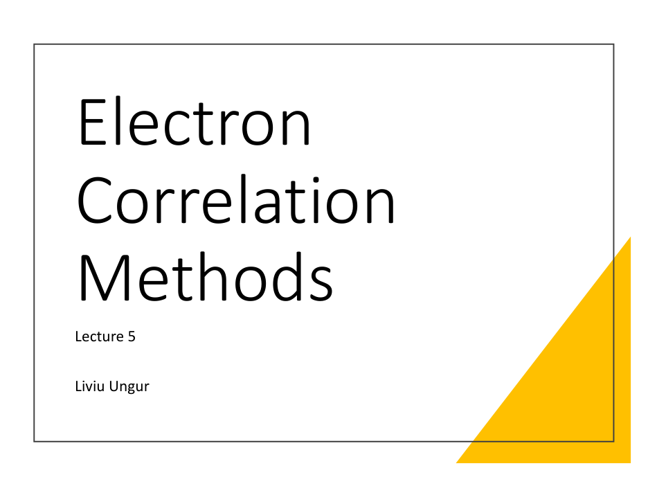
电子相关方法，第 5 讲，Liviu Ungur。
讲解
标题延续了第 4 讲的"电子相关方法"，因为 DFT 在这门课的框架里也是一种处理电子相关的方法——只不过它不是通过加行列式，而是通过一个"交换-相关泛函"把相关能近似地塞进去。
p2各种密度与分布
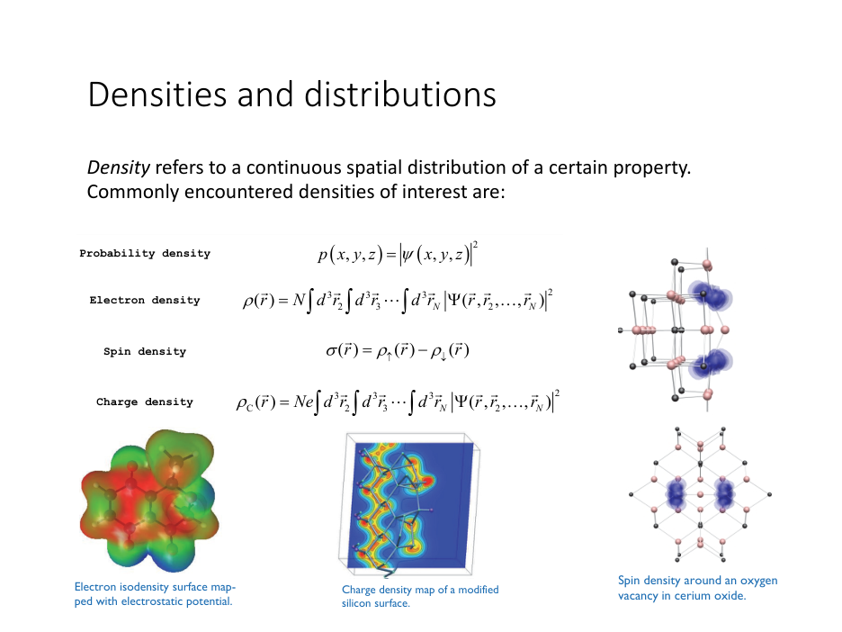
密度指某个性质在空间中的连续分布。常见的密度有：概率密度 p(x,y,z) = |ψ(x,y,z)|²；电子密度 ρ(r) = N∫|Ψ(r,r₂,…,rN)|²d³r₂⋯d³rN；自旋密度 σ(r) = ρ↑(r) − ρ↓(r)；电荷密度 ρC(r) = Ne∫|Ψ|²d³r₂⋯d³rN。
（三张图：映射了静电势的电子等密度面；修饰硅表面的电荷密度图；氧化铈中氧空位周围的自旋密度。）
讲解
这一页和第 4 讲 p44 完全相同，详细的公式解析和每个符号的标注见第 4 讲 p44。放在这里是为了引出本讲的主角——电子密度 ρ(r)。
记住第 4 讲那一页的核心结论就够了：波函数有 3N 个变量且不可观测；电子密度只有 3 个变量，而且能被 X 射线衍射直接测到。DFT 就是要"只用密度"来做量子化学。
- 电子密度的定义式里为什么乘 N、为什么要对其余 N−1 个电子积分（见第 4 讲 p44）
- 自旋密度 = α 密度 − β 密度；它对应 EPR 实验
p3本讲提纲
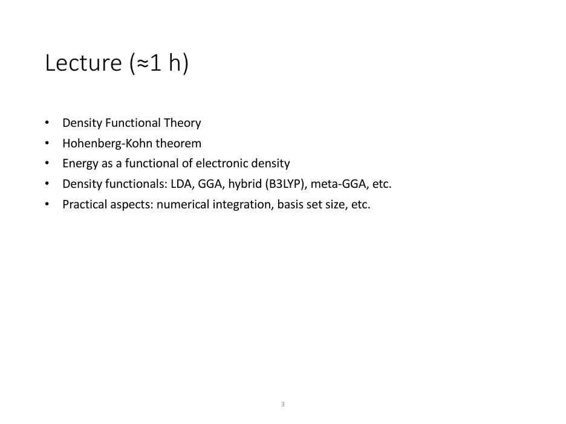
课程（约 1 小时）：
- 密度泛函理论
- Hohenberg–Kohn 定理
- 能量作为电子密度的泛函
- 密度泛函：LDA、GGA、杂化 (B3LYP)、meta-GGA 等
- 实际问题：数值积分、基组大小等
讲解 · 三个关键词先认个脸
| 词 | 一句话意思 |
|---|---|
| 泛函 (functional) | "吃进一个函数、吐出一个数"的规则（p18 详讲）。能量 E[ρ] 就是一个泛函：你给它一个密度分布，它返回一个能量值。 |
| Hohenberg–Kohn 定理 | DFT 的理论基石（1964）：基态密度唯一确定体系的一切（p11–p20）。 |
| LDA / GGA / 杂化 | 对未知的"交换-相关泛函"的一系列越来越精细的近似（p24–p36）。 |
p4电子密度分布与密度矩阵
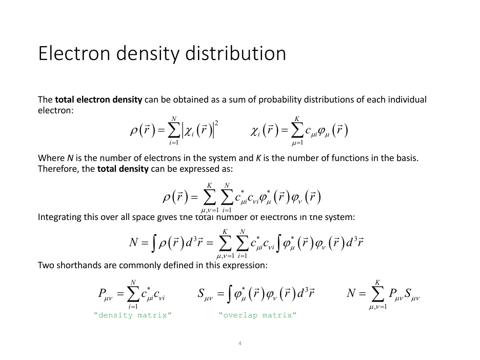
总电子密度可以作为每个单独电子的概率分布之和得到：
ρ(r) = Σi=1N |χi(r)|² ， χi(r) = Σμ=1K cμiφμ(r)
其中 N 是体系中的电子数，K 是基组中的函数数目。因此总密度可以表示为：
ρ(r) = Σμ,ν=1K Σi=1N cμi*cνi φμ*(r)φν(r)
对全空间积分给出体系的总电子数：
N = ∫ρ(r)d³r = Σμ,νΣi cμi*cνi ∫φμ*(r)φν(r)d³r
这个表达式里通常定义两个简写：
Pμν = Σi=1N cμi*cνi "密度矩阵"； Sμν = ∫φμ*(r)φν(r)d³r "重叠矩阵"； N = Σμ,ν PμνSμν
第 3 讲里 φ 是分子轨道、χ 是基函数；这一页反过来——χi 是分子（自旋）轨道，φμ 是基函数。密度矩阵在第 3 讲叫 D，这里叫 P（Gaussian 输出里也叫 P）。同一样东西换了名字，别被吓到。看下标最保险：希腊字母 μ,ν 永远数基函数，拉丁字母 i 永远数轨道/电子。
公式解析 · 从轨道到密度，一步一步
| 符号 | 名称 | 含义 |
|---|---|---|
| ρ(r) | 电子密度 | 空间点 r 处单位体积里的电子数 |
| χi | 分子（自旋）轨道 | 第 i 个占据轨道。本页用 χ 表示轨道 |
| φμ | 基函数 | 第 μ 个原子轨道基函数（高斯函数），已知且固定 |
| cμi | MO 系数 | 基函数 μ 在轨道 i 中的权重，SCF 解出来的东西 |
| N | 电子数 | 这里的求和对占据的自旋轨道进行，所以上限就是电子数 |
| K | 基函数总数 | 就是 Gaussian 输出里的 NBasis |
| Pμν | 密度矩阵 | 把所有占据轨道的系数打包成一个 K×K 矩阵——有了它，不用再管单个轨道，密度就完全确定了 |
| Sμν | 重叠矩阵 | 两个基函数的重叠积分。对角元 = 1（基函数归一化） |
| * | 复共轭 | 实函数时可以忽略 |
| tr(PS) | 矩阵的迹 | trace = 对角元之和。ΣμνPμνSμν 就等于 tr(PS)（因为 S 对称） |
|χi|² = χi*·χi。把两个因子各自展开：
两个和相乘，就得到"每一项 × 每一项"——所以变成双重求和，下标要用两个不同的字母 μ 和 ν。然后再对所有占据轨道 i 求和，把只含 i 的部分 Σicμi*cνi 单独拎出来，起个名字叫 Pμν。密度矩阵就是这么来的。
2 个基函数（1sA、1sB），1 个双占据轨道 σg = c(1sA + 1sB)，c = 1/√(2(1+S))。闭壳层时 Pμν = 2Σ空间轨道cμicνi，所以：
N = ΣPμνSμν = 2c²(1 + S + S + 1) = 2c²·2(1+S) = 2·[1/(2(1+S))]·2(1+S) = 2 ✔ 正好两个电子。
- 写出 Pμν 和 Sμν 的定义，证明 N = ΣPμνSμν
- 为什么密度表达式里需要重叠矩阵？——因为基函数不正交（第 2 讲 p18、第 3 讲 p39）
p5把密度划分给原子和化学键：Mulliken 布居
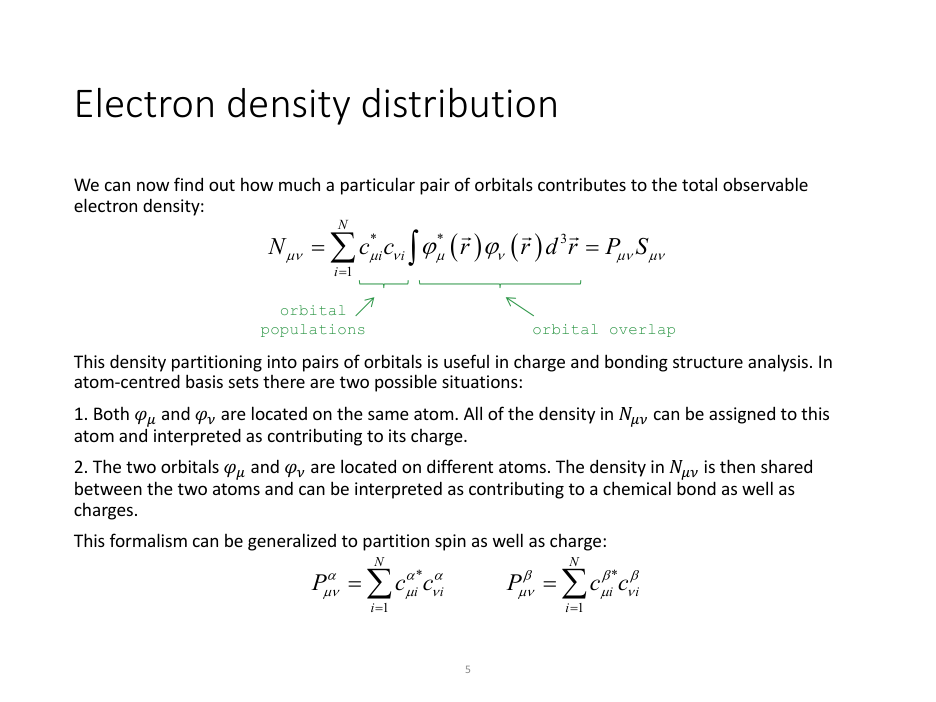
现在我们可以求出某一对轨道（基函数）对总的可观测电子密度贡献了多少：
Nμν = Σi=1N cμi*cνi ∫φμ*(r)φν(r)d³r = PμνSμν （前一部分 = 轨道布居，后一部分 = 轨道重叠）
这种按轨道对划分密度的做法在电荷分析和成键结构分析中很有用。在以原子为中心的基组中有两种情形：
- φμ 和 φν 在同一个原子上。Nμν 中的全部密度可以分给这个原子，解释为对它电荷的贡献。
- φμ 和 φν 在不同原子上。Nμν 中的密度由两个原子共享，可以解释为对化学键以及电荷的贡献。
这个形式可以推广到自旋和电荷的划分：
Pμνα = Σi cμiα*cνiα ， Pμνβ = Σi cμiβ*cνiβ
公式解析 · 布居矩阵
| 符号 | 名称 | 含义 |
|---|---|---|
| Nμν | 布居矩阵元 | "基函数 μ 与 ν 这一对"分到的电子数。所有元素加起来 = N |
| Nμμ | 净布居 | 对角元：纯粹属于基函数 μ 的电子（因为 Sμμ=1，就等于 Pμμ） |
| Nμν（μ≠ν） | 重叠布居 | 非对角元：两个基函数"共有"的电子 |
| Pα, Pβ | α/β 密度矩阵 | 只用 α（或 β）电子的系数构造。P = Pα + Pβ（总密度），Pα − Pβ 就是自旋密度矩阵 |
讲解 · Mulliken 原子电荷是怎么从这张表算出来的
| qA | 原子 A 的 Mulliken 电荷 | 正 = 缺电子，负 = 富电子 |
| ZA | 核电荷 | 用 ECP 时是价电子数 |
| (PS)μμ | 矩阵乘积的对角元 | = ΣνPμνSνμ：基函数 μ 的净布居 + 它和所有其他函数的重叠布居的一半（另一半在对面） |
| μ∈A | "属于 A 的基函数" | 只对以原子 A 为中心的基函数求和 |
| Gaussian / ORCA 输出 | 从这一页的哪个量来 |
|---|---|
| Mulliken charges | 上面的 qA 公式 |
| Mulliken spin densities（开壳层） | 把 P 换成 Pα − Pβ 再做同样的分配 → 每个原子上有多少未成对电子。本讲 p48 的 Cu₂Cl₆²⁻ 作业就要看这个 |
| Mayer 键级 | 用 A–B 跨原子块的元素构造。单键约 1，双键约 2 |
老问题再提一次（第 3 讲 p58 讲过）："平分重叠布居"是一个人为约定，所以 Mulliken 电荷对基组很敏感，加弥散函数后可能完全失去意义。只能比较同一计算里不同原子的相对大小。
- Nμν = PμνSμν 的两种情形：同一原子 → 电荷；不同原子 → 化学键
- 自旋密度 = Pα − Pβ
- Mulliken 电荷为什么依赖基组
p6电子相关能（回顾）
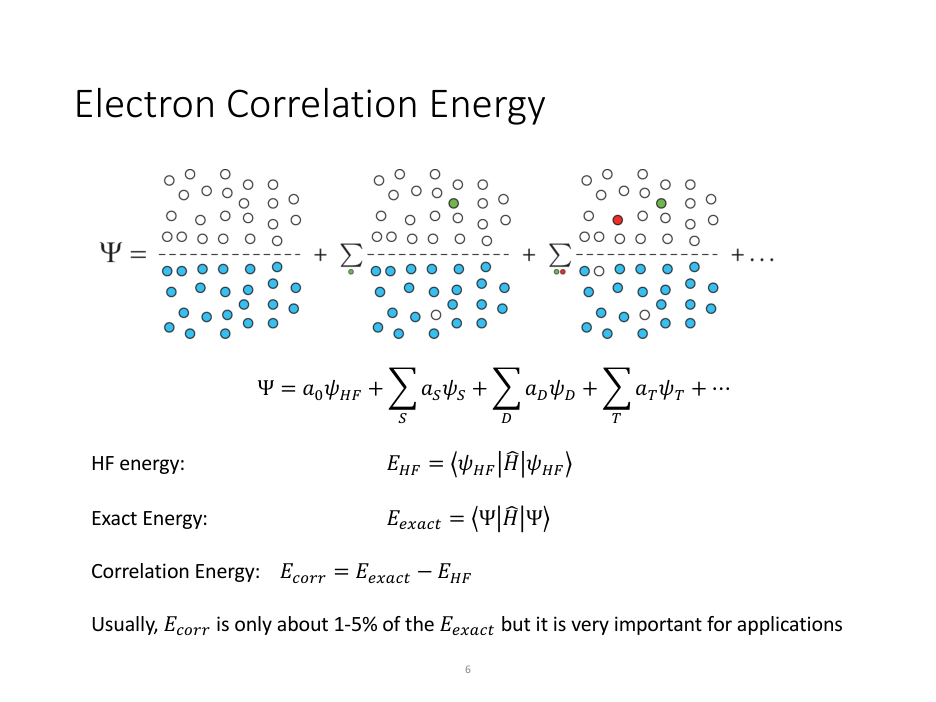
Ψ = a₀ψHF + ΣSaSψS + ΣDaDψD + ΣTaTψT + ⋯
HF 能量：EHF = ⟨ψHF|Ĥ|ψHF⟩ ； 精确能量：Eexact = ⟨Ψ|Ĥ|Ψ⟩
相关能：Ecorr = Eexact − EHF
通常 Ecorr 只占 Eexact 的约 1–5%，但它对应用非常重要。
讲解
这是第 4 讲 p2–p3 的浓缩（详细解析见第 4 讲 p3）。S、D、T 分别是单、双、三激发行列式的下标。放在这里的目的，是提醒你DFT 要解决的仍然是这个问题：把 HF 丢掉的那 1–5% 找回来。
区别在于方法：第 4 讲靠增加行列式（贵），DFT 靠一个近似的交换-相关泛函（便宜）。
p7外势：什么东西决定了"这是哪个分子"
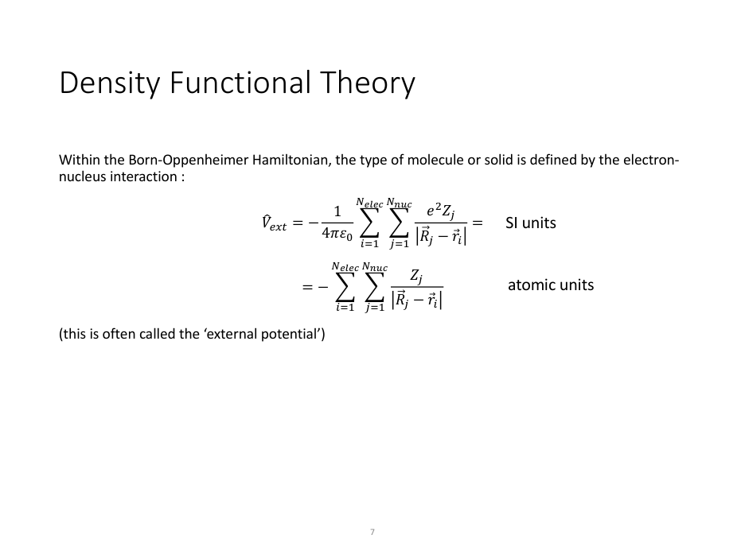
在 Born–Oppenheimer 哈密顿量中，分子或固体的种类由电子-原子核相互作用决定：
V̂ext = −(1/4πε₀) Σi=1Nelec ΣA=1Nnuc e²ZA/|RA − ri| （SI 单位） = −ΣiΣA ZA/|RA − ri| （原子单位）
（这常被称为"外势"。）
公式解析 · 外势
| 符号 | 名称 | 含义 |
|---|---|---|
| V̂ext | 外势 | 所有电子感受到的原子核吸引。"外"是相对于电子而言——它不是电子之间的作用，是"外面"的核施加的 |
| i | 电子编号 | 1 到 Nelec |
| A | 原子核编号 | 1 到 Nnuc |
| ZA | 核电荷数 | C=6，O=8 |
| RA | 核的位置 | BO 近似下固定不动（大写 R 表示核） |
| ri | 电子的位置 | 小写 r 表示电子 |
| e, ε₀ | 电子电荷、真空介电常数 | 原子单位下都消失（第 2 讲 p44 拓展） |
讲解 · 为什么说外势"定义了分子"
把分子哈密顿量（BO 近似后）拆开看：
| 项 | 对不同分子是否相同？ |
|---|---|
| 动能 T̂ = −½Σ∇i² | 完全一样——所有电子的动能算符都是同一个形式 |
| 电子排斥 V̂ee = Σ1/rij | 完全一样——电子之间的排斥不管在哪个分子里都是 1/r |
| 外势 V̂ext | 唯一不同的地方——核在哪、带多少电荷 |
所以：给定电子数 N，只要知道 Vext，就知道了整个哈密顿量，也就知道了一切。苯和吡啶的区别，全在于 Vext 里有一个 Z=6 换成了 Z=7。
这一点是下面 HK 定理的起点：HK 定理要证明的，就是"知道密度 ⟺ 知道外势"。
- 外势的定义；为什么 T̂ 和 V̂ee 是"普适的"而 V̂ext 是"体系特有的"
p8–9电子密度算符
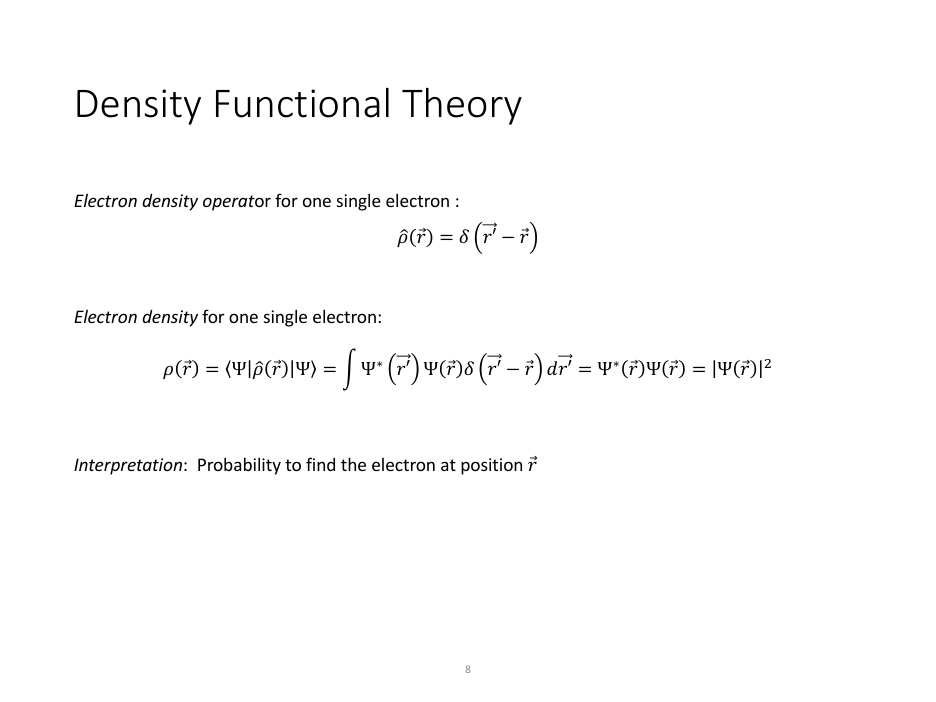
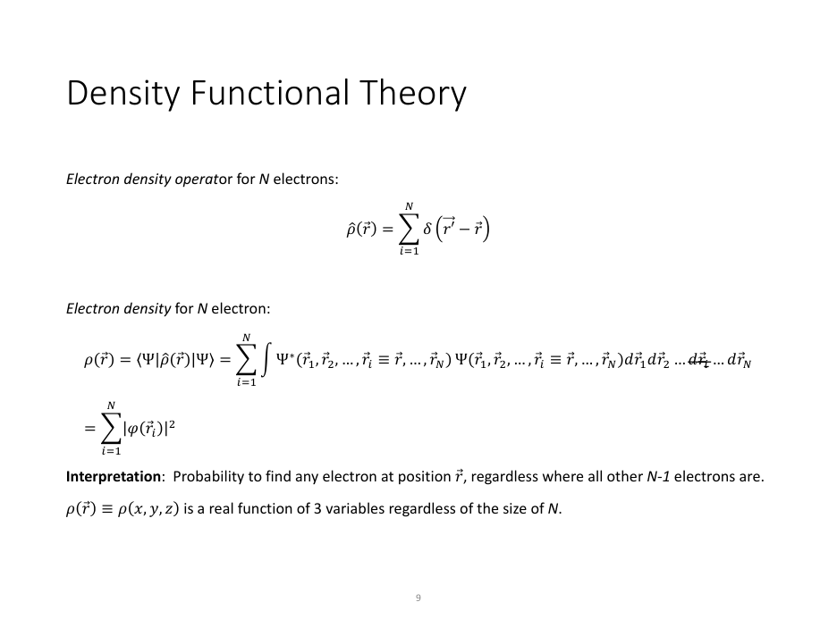
单个电子的电子密度算符：ρ̂(r) = δ(r′ − r)
单个电子的电子密度：ρ(r) = ⟨Ψ|ρ̂(r)|Ψ⟩ = ∫Ψ*(r′)Ψ(r′)δ(r′ − r)dr′ = Ψ*(r)Ψ(r) = |Ψ(r)|²
解释：在位置 r 找到电子的概率。
N 个电子的电子密度算符：ρ̂(r) = Σi=1N δ(ri − r)
N 电子的电子密度：
ρ(r) = ⟨Ψ|ρ̂(r)|Ψ⟩ = Σi=1N ∫Ψ*(r₁,r₂,…,ri≡r,…,rN)Ψ(r₁,…,ri≡r,…,rN)dr₁dr₂…dri…drN = Σi=1N|φ(ri)|²
解释：在位置 r 找到任何一个电子的概率，不管其他 N−1 个电子在哪里。
ρ(r) ≡ ρ(x,y,z) 是一个 3 变量的实函数，无论 N 多大。
公式解析 · Dirac δ 函数（这两页的关键工具）
| 符号 | 名称 | 含义 |
|---|---|---|
| δ(r′ − r) | Dirac δ 函数 | 一个"无限窄、无限高、面积为 1"的尖峰，只在 r′ = r 处非零。它的作用是"挑出"被积函数在某一点的值 |
| r′ | 积分变量 | 带撇号的是"跑遍全空间"的哑变量 |
| r | 探测点 | 你想知道密度的那个位置（固定的） |
| ρ̂(r) | 密度算符 | "去 r 点数一数有没有电子"这个操作 |
| ri ≡ r | 把第 i 个电子钉在 r | 只有这个电子的坐标不积分，其余全积掉 |
想象你有一张全城人口分布图 f(r′)，你想知道某个路口 r 的人口。δ 函数就像一个只在那个路口开着的小窗口：把整张图乘上这个窗口再求和，其他地方全被乘成 0，只剩窗口里的那个值。
所以 ∫Ψ*(r′)Ψ(r′)δ(r′−r)dr′ = Ψ*(r)Ψ(r)："算密度算符的期望值"就等于"在那一点取 |Ψ|²"——这就是第 2 讲 p32 的 Born 解释，只不过换成了算符语言。
密度算符 Σiδ(ri − r) 的意思是："电子 1 在 r 吗？+ 电子 2 在 r 吗？+ … + 电子 N 在 r 吗？"
每一项都给出"那个特定电子在 r 的概率"。因为电子全同，这 N 项的值完全相等，所以总和 = N × （任意一个电子在 r 的概率）。这就是第 4 讲 p44 公式里那个因子 N 的来源。
最后等于 Σi|φi|² 这一步只在单个 Slater 行列式下成立（用到了轨道正交归一）——这正是 p4 那个式子。
"ρ(r) 是 3 变量的实函数，无论 N 多大。"
| 体系 | 波函数的变量数 3N | 密度的变量数 |
|---|---|---|
| H₂（2 电子） | 6 | 3 |
| 苯（42 电子） | 126 | 3 |
| 一个小蛋白（~10⁴ 电子） | ~30 000 | 还是 3 |
如果能只用密度做量子化学，问题的复杂度就和体系大小脱钩了。但凭什么说 3 个变量的函数就包含了 3N 个变量的函数的全部信息？——这就是 HK 第一定理要回答的问题。
- 密度算符的定义 ρ̂(r) = Σiδ(ri − r) 及其物理解释
- "ρ 只有 3 个变量，与 N 无关"——这是 DFT 相对波函数方法的根本优势
p10数学准备：单射、满射、双射
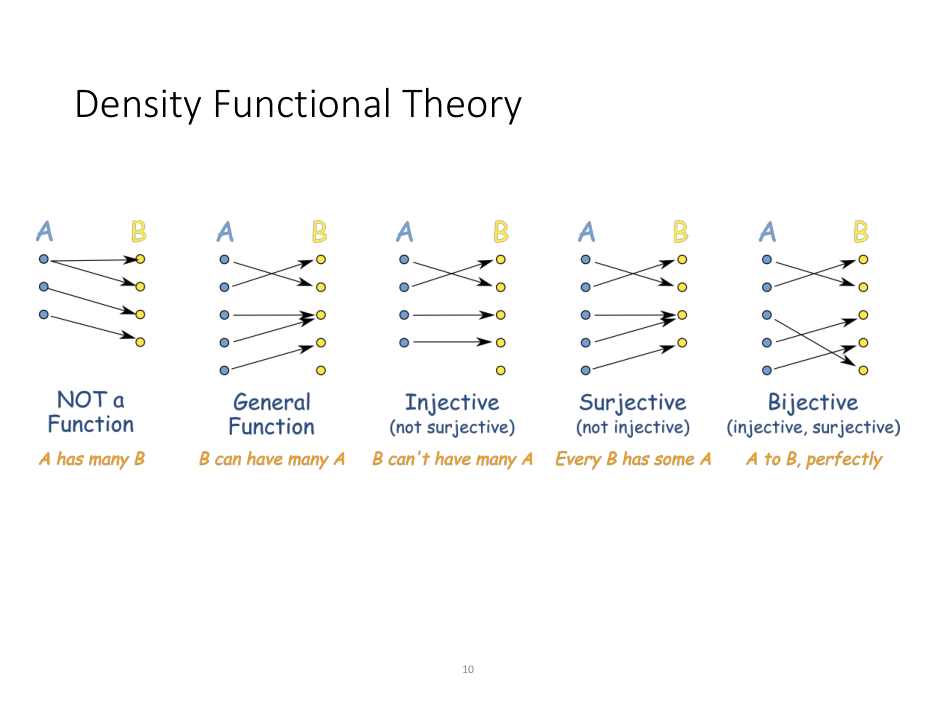
（五张示意图，每张左边一列 A、右边一列 B，箭头表示对应关系）
- 不是函数：一个 A 对应多个 B
- 一般函数：一个 B 可以有多个 A
- 单射 (Injective)（非满射）：一个 B 不能有多个 A
- 满射 (Surjective)（非单射）：每个 B 都有某个 A
- 双射 (Bijective)（既单又满）：A 到 B 完美对应
讲解 · 三个词，用"学生与座位"来记
设 A = 一群学生，B = 教室里的座位，箭头 = "谁坐哪"。
| 类型 | 数学定义 | 座位比喻 |
|---|---|---|
| 函数 | 每个 A 恰好对应一个 B | 每个学生都坐且只坐一个位子（不能一人占两座） |
| 单射 injective | 不同的 A → 不同的 B （f(a₁) = f(a₂) ⟹ a₁ = a₂） | 没有两个人挤同一个座位（可能有空座） |
| 满射 surjective | 每个 B 都至少被一个 A 对应 | 没有空座位（可能有人挤一起） |
| 双射 bijective | 既单射又满射 | 一人一座，不多不少 → 可以反过来：看座位就知道是谁 |
只有双射才能"反推"。如果"波函数 → 密度"是双射，那么知道密度就能唯一反推出波函数，于是密度里就包含了波函数的全部信息。
如果只是一般函数（两个不同波函数可以给出同一个密度），那么光看密度就分不清是哪个波函数——信息丢了，DFT 就不可能成立。p11–p16 就是在证明：它确实是双射。
p11–14★ Hohenberg–Kohn 第一定理（映射图）
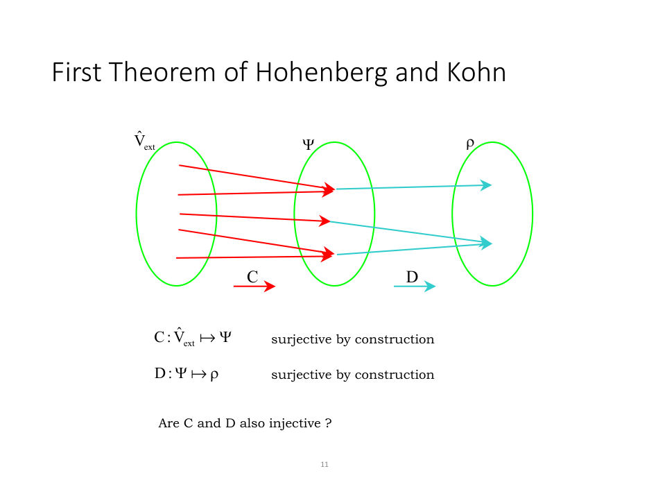
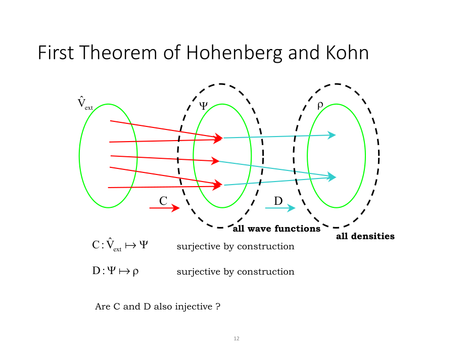
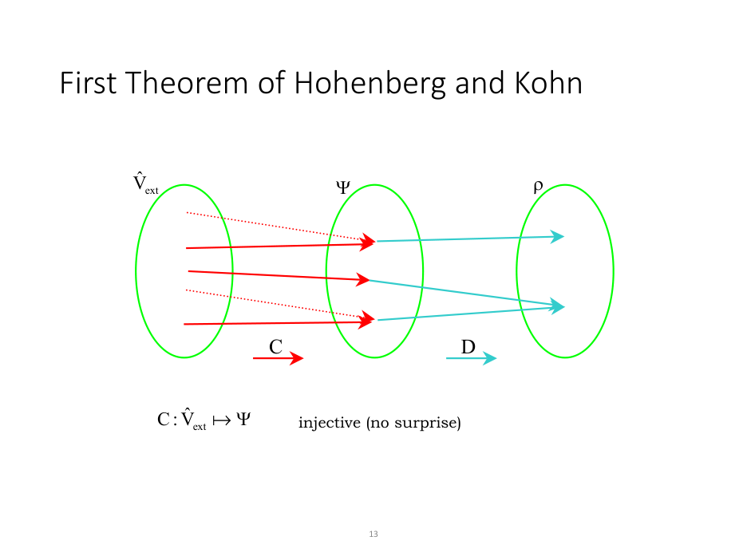
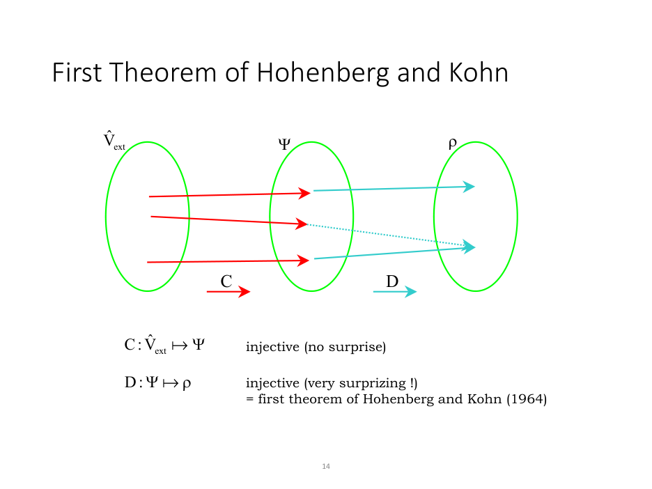
三个集合：外势 V̂ext → 波函数 Ψ → 密度 ρ。两个映射：
C：V̂ext ↦ Ψ （解薛定谔方程）； D：Ψ ↦ ρ （从波函数算密度）
p11–12：两者按构造都是满射（"所有波函数""所有密度"）。C 和 D 也是单射吗？
p13：C：V̂ext ↦ Ψ 单射（不意外）
p14：D：Ψ ↦ ρ 单射（非常令人意外！）= Hohenberg 和 Kohn 的第一定理 (1964)
讲解 · 把这张图读懂
两个不同的外势（比如核的位置不同），解出的基态波函数当然不同——这是物理直觉，数学上也容易证明（两个不同的 V 不可能有相同的基态本征函数，除非它们只差一个常数）。
D 做的事是：从一个 3N 维的函数 Ψ，积掉 3(N−1) 个变量，只留下 3 维的 ρ。
直觉上这是一个极度"有损"的压缩——就像把一部电影压成一张平均亮度图，你怎么可能从平均亮度图还原出电影？
一般的波函数确实做不到（很多不同的 Ψ 可以有相同的 ρ）。HK 定理的惊人之处在于：只要限定为某个外势下的基态波函数，这种压缩就是无损的。
关键限定词是"基态"——激发态不适用。这也是为什么普通 DFT 只能算基态，激发态要用 TD-DFT（p44）。
- 画出 Vext → Ψ → ρ 的映射图，说明为什么映射 D 的单射性是 HK 第一定理
- HK 定理只适用于基态
p15★ HK 第一定理的证明（反证法，可能直接考）
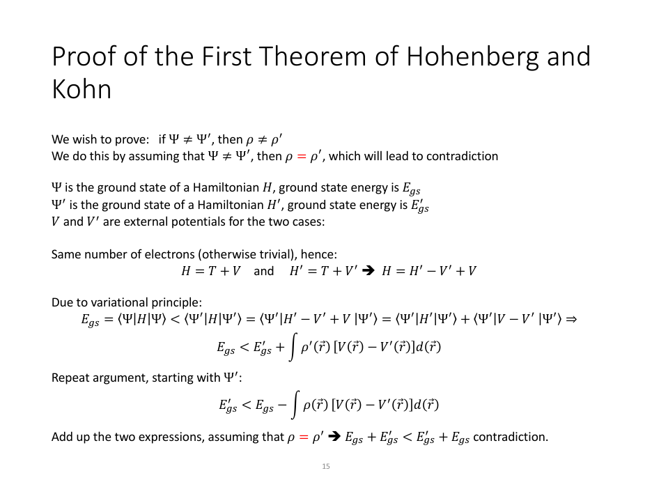
我们要证明：如果 Ψ ≠ Ψ′，那么 ρ ≠ ρ′。
做法：假设 Ψ ≠ Ψ′ 但 ρ = ρ′，推出矛盾。
Ψ 是哈密顿量 H 的基态，基态能量为 EGS；Ψ′ 是哈密顿量 H′ 的基态，基态能量为 EGS′。V 和 V′ 是两种情况的外势。
电子数相同（否则是平凡的），因此：H = T + V，H′ = T + V′ ⟹ H = H′ − V′ + V
由变分原理：
EGS = ⟨Ψ|H|Ψ⟩ < ⟨Ψ′|H|Ψ′⟩ = ⟨Ψ′|H′ − V′ + V|Ψ′⟩ = ⟨Ψ′|H′|Ψ′⟩ + ⟨Ψ′|V − V′|Ψ′⟩ ⟹
EGS < EGS′ + ∫ρ′(r)[V(r) − V′(r)]dr
从 Ψ′ 出发重复这个论证：EGS′ < EGS − ∫ρ(r)[V(r) − V′(r)]dr
把两式相加，并假设 ρ = ρ′ ⟹ EGS + EGS′ < EGS′ + EGS 矛盾。
证明逐步拆解（每一步的依据都写出来）
| 符号 | 名称 | 含义 |
|---|---|---|
| V, V′ | 两个不同的外势 | 假设它们不只差一个常数（差常数的外势给出同一个 Ψ，是平凡情形） |
| Ψ, Ψ′ | 对应的基态波函数 | 假设不相同 |
| EGS, EGS′ | 对应的基态能量 | GS = Ground State |
| T | 动能 + 电子排斥 | 讲义把 T̂ + V̂ee 合写成 T——两个体系完全相同（p7：它们是普适的） |
| <（严格小于） | 严格变分不等式 | 因为 Ψ′ 不是 H 的基态，用它算出的能量严格高于 H 的真实基态能量（假设基态不简并） |
两个体系电子数相同，所以 T（动能 + 电子排斥）完全一样，只有外势不同：
把 Ψ′ 当成 H 的"试探函数"——它不是 H 的基态，所以：
第一项就是 EGS′（Ψ′ 是 H′ 的基态）。
V 是一个"乘法型"的单电子算符：V = Σiv(ri)。它的期望值：
对任何单电子乘法算符，期望值都只需要密度就能算——不需要完整的波函数。（这和 p9 的密度定义是同一件事：积掉其余电子后只剩 ρ。）于是：
这次把 Ψ 当成 H′ 的试探函数，完全对称地得到：
假设 ρ = ρ′（我们要推翻的假设），那么 ① 和 ② 里的两个积分大小相等、符号相反，相加后抵消：
一个数严格小于它自己，这不可能。所以假设错了——两个不同的外势不可能给出同一个基态密度。∎
- 反设：V ≠ V′（Ψ ≠ Ψ′）但 ρ = ρ′
- 变分原理 + "势能期望值只依赖密度" → 不等式 ①
- 对称地 → 不等式 ②
- 相加 → E + E′ < E + E′，矛盾
- 结论：ρ 唯一确定 Vext（至多差一个常数），从而确定 H、Ψ 和一切性质
用到的两个前提：① 变分原理；② 基态非简并（否则"<"要变成"≤"，证明需要修补——Levy 在 1979 年给出了推广）。
它证明了"ρ 决定一切"，但完全没有告诉你怎么从 ρ 算出能量——那个"从密度到能量的规则"（泛函）存在，但它长什么样没人知道。
这就是 DFT 的根本处境：理论上是精确的，实践上必须近似。Kohn 因此在 1998 年获诺贝尔奖，而找到那个精确泛函至今仍是未解决的问题（p24 "One unique expression must exist, but it is unknown"）。
- 用反证法证明 HK 第一定理（上面五步，务必能独立写出来）
- 证明中用到了哪两个前提（变分原理、非简并基态）
- 为什么 ⟨Ψ|V|Ψ⟩ = ∫ρVdr
p16–17一一对应及其后果
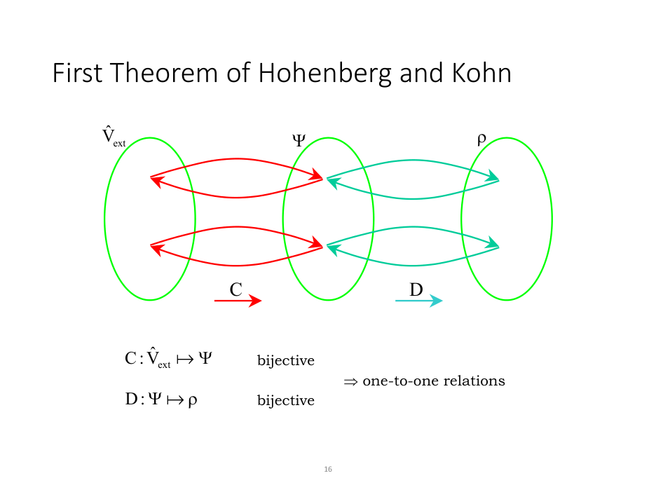
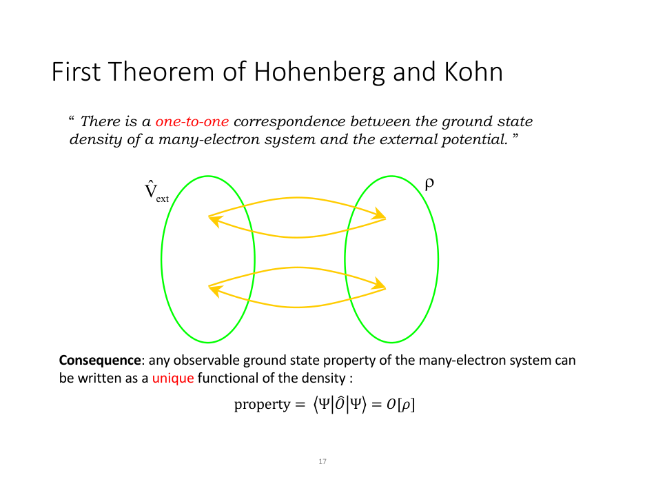
p16：C：V̂ext ↦ Ψ 双射；D：Ψ ↦ ρ 双射 ⟹ 一一对应关系。
p17："多电子体系的基态密度与外势之间存在一一对应。"
推论：多电子体系任何可观测的基态性质都可以写成密度的唯一泛函：
性质 = ⟨Ψ|Ô|Ψ⟩ = O[ρ]
公式解析 · "一切性质都是密度的泛函"
| 符号 | 名称 | 含义 |
|---|---|---|
| ρ0 | 基态密度 | 下标 0 = 基态 |
| Ô | 任意可观测量的算符 | 能量、偶极矩、键长…… |
| O[ρ] | 密度泛函 | 方括号 [ ] 专门表示"泛函"——括号里放的是一个函数，不是一个数（对比圆括号 f(x) 里放的是数） |
- ρ₀ ⟹ Vext：HK 第一定理（p15）
- Vext ⟹ Ĥ：因为 T̂ 和 V̂ee 是普适的（p7），电子数 N = ∫ρdr 也由密度给出
- Ĥ ⟹ Ψ₀：解薛定谔方程（原则上）
- Ψ₀ ⟹ 任何性质：量子力学公设 4（第 2 讲 p38）
所以密度"间接地"知道一切——这就是 p27 说的 "The basic lemma of DFT"。
- 陈述 HK 第一定理：基态密度与外势一一对应
- 推论：任何基态可观测量都是密度的唯一泛函
p18什么是泛函？
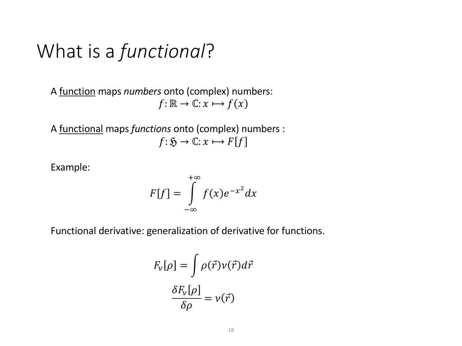
函数把数映射成（复）数：f: ℝ → ℂ: x ↦ f(x)
泛函把函数映射成（复）数：F: ℌ → ℂ: f ↦ F[f]
例：F[f] = ∫−∞+∞ f(x)e−x²dx
泛函导数：导数对泛函的推广。
F1[ρ] = ∫ρ(r)ν(r)dr ⟹ δF1[ρ]/δρ = ν(r)
公式解析 · 函数 vs 泛函
| 函数 f(x) | 泛函 F[f] | |
|---|---|---|
| 输入 | 一个数 x | 一整个函数 f(·) |
| 输出 | 一个数 | 一个数 |
| 记号 | 圆括号 (x) | 方括号 [f] |
| 例子 | f(x) = x²：给 3 得 9 | F[f] = ∫₀¹f(x)dx：给 f=x² 得 1/3，给 f=sin 得 1−cos1 |
| 日常类比 | "温度 → 穿几件衣服" | "一整天的温度曲线 → 这一天的平均体感" |
| 符号 | 名称 | 含义 |
|---|---|---|
| ℝ, ℂ | 实数集、复数集 | 函数的定义域和值域 |
| ℌ | 希尔伯特空间 | "所有合法波函数（或密度）组成的集合"——泛函的定义域是一个函数的集合 |
| ν(r) | 某个给定的函数 | 例子里扮演外势的角色（希腊字母 nu，别和速度 v 混） |
| δF/δρ | 泛函导数 | 见下 |
普通导数问："x 变一点点，f 变多少？"
泛函导数问："函数 ρ 在点 r 附近变一点点，F 变多少？"——答案随 r 变化，所以泛函导数本身是一个关于 r 的函数。
讲义的例子：F₁[ρ] = ∫ρνdr。给 ρ 一个小改变 δρ：
δF₁ = ∫(ρ+δρ)νdr − ∫ρνdr = ∫ν(r)·δρ(r)dr ⟹ δF₁/δρ = ν(r) ✔
这个例子不是随便举的：外势能量 ∫ρVextdr 对密度的泛函导数就是外势本身。p22 的 Vxc = δExc/δρ 就是用同样的方式从能量泛函得到势。
第 3 讲的变分原理里，E[ψ] = ⟨ψ|Ĥ|ψ⟩/⟨ψ|ψ⟩ 就是一个波函数的泛函——给一个试探函数，吐出一个能量。HF 就是在"最小化波函数泛函"。
DFT 做的是同一件事，只是把自变量从 3N 维的 ψ 换成了 3 维的 ρ。
- 函数与泛函的区别；为什么能量是密度的"泛函"而不是"函数"
- 泛函导数的例子：δ(∫ρν)/δρ = ν
p19–20★ Hohenberg–Kohn 第二定理（密度的变分原理）
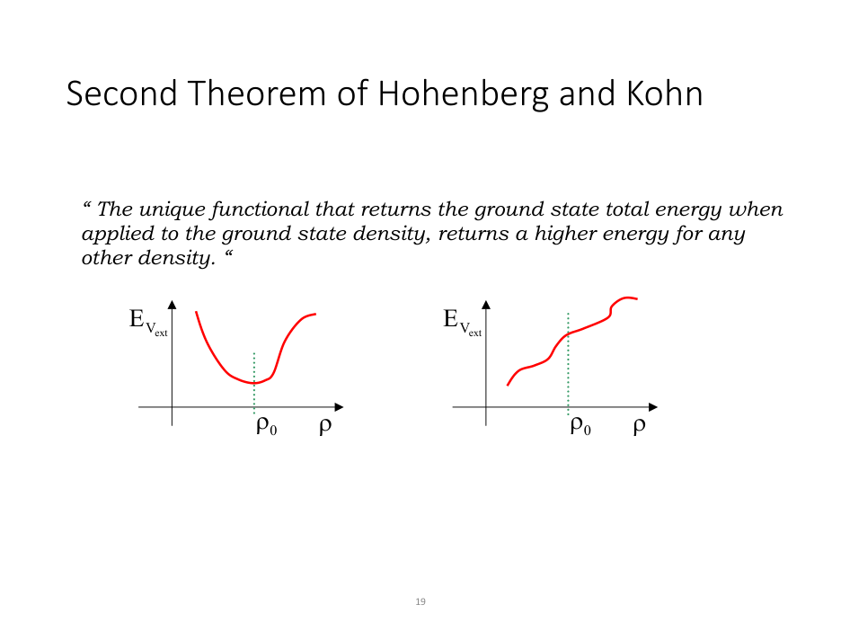
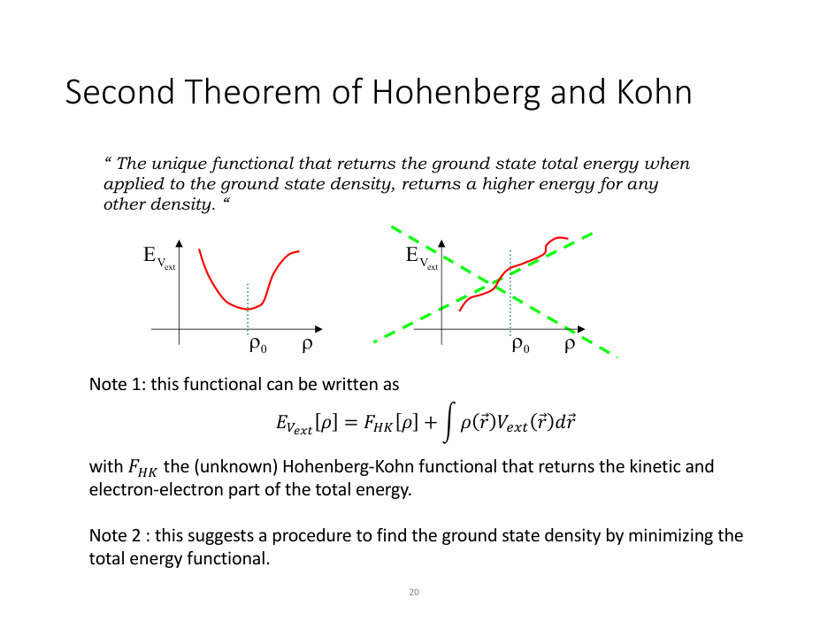
"当作用于基态密度时返回基态总能量的那个唯一泛函，作用于任何其他密度时返回更高的能量。"
（两张图：左图，EVext[ρ] 在 ρ₀ 处有极小值；右图，一条单调上升的曲线，ρ₀ 处没有极小值——这是不满足定理的情形。）
注 1：这个泛函可以写成
EVext[ρ] = FHK[ρ] + ∫ρ(r)Vext(r)dr
其中 FHK 是（未知的）Hohenberg–Kohn 泛函，它返回总能量中的动能部分和电子-电子部分。
注 2：这提示了一种通过最小化总能量泛函来求基态密度的方法。
公式解析 · HK 能量泛函
| 符号 | 名称 | 含义 |
|---|---|---|
| EVext[ρ] | 能量泛函 | 下标 Vext 表示"对这个特定的分子"——不同分子的外势不同，泛函不同 |
| FHK[ρ] | HK 泛函 （普适泛函） | 动能 + 电子排斥能。它对所有分子都一样（因为 T̂、V̂ee 是普适的，p7）。如果知道它，就能算任何分子——但它的形式未知 |
| ∫ρVextdr | 外势能量 | 核-电子吸引能。精确已知（p15 第 3 步：单电子乘法算符的期望值只需要密度） |
| T[ρ] | 动能泛函 | 未知 |
| Vee[ρ] | 电子排斥能泛函 | 未知（其中经典的库仑部分已知，见 p22） |
讲解 · 第二定理就是"密度版的变分原理"
| 变分原理（第 3 讲 p26） | HK 第二定理 | |
|---|---|---|
| 试探对象 | 波函数 ψtrial | 密度 ρtrial |
| 结论 | E[ψtrial] ≥ E0 | E[ρtrial] ≥ E0 |
| 用法 | 调 ψ 使能量最低 | 调 ρ 使能量最低 |
任给一个合法的试探密度 ρ′。由第一定理，它对应某个外势和某个波函数 Ψ′。把 Ψ′ 代入我们这个分子的哈密顿量，由普通的变分原理：
- 左图（正确）：泛函在真实基态密度 ρ₀ 处取最小值——任何偏离都让能量升高。
- 右图（错误）：一条没有极小值的曲线，ρ₀ 只是曲线上普通的一点。这是一个"坏泛函"的样子：如果泛函长这样，最小化它根本找不到 ρ₀。
第二定理保证精确的泛函一定长得像左图。但近似泛函不一定——这就是为什么 DFT 的能量不像 HF 那样严格是变分上界（第 3 讲 p81 问题 9 的伏笔）。
- 第一定理：只要找到 ρ₀，就知道一切 → 目标明确了
- 第二定理：ρ₀ 就是让 E[ρ] 最小的那个 → 找的方法也有了（最小化）
- 唯一的障碍：FHK[ρ] 长什么样不知道 → 这就是 p22 的 Kohn–Sham 要解决的
- 陈述 HK 第二定理；它与波函数变分原理的关系
- 写出 E[ρ] = FHK[ρ] + ∫ρVext，说明哪部分已知、哪部分未知、哪部分是普适的
p21"基态总能量"是什么
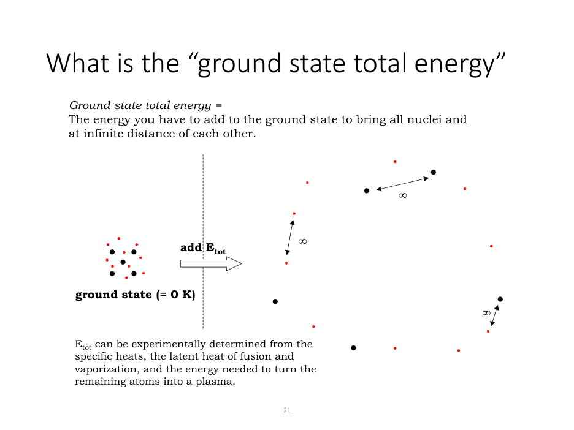
基态总能量 = 为了把所有原子核和电子带到彼此相距无穷远处，你需要向基态加入的能量。
（图：左边是基态（= 0 K）的一小团原子核（黑点）与电子（红点）；加入 Etot 后，所有粒子彼此相距 ∞。）
Etot 可以从实验上测定：比热、熔化与汽化潜热，以及把剩下的原子变成等离子体所需的能量。
讲解 · 为什么量化算出的能量是 −2692 Hartree 这种巨大的负数
能量零点定义在"所有粒子彼此无限远、静止不动"的状态。从那里把粒子聚在一起形成分子，会放出能量（核-电吸引远大于排斥），所以分子的总能量是负的。
这就是第 1 讲 p20 说"科学计算必须双精度"的原因：总能量几千 Hartree，化学精度要求 0.0016 Hartree。
- 基态总能量的定义（相对于"全部粒子无限远"的零点）；为什么它是负的
p22★ Kohn–Sham 方程：DFT 真正能用的形式
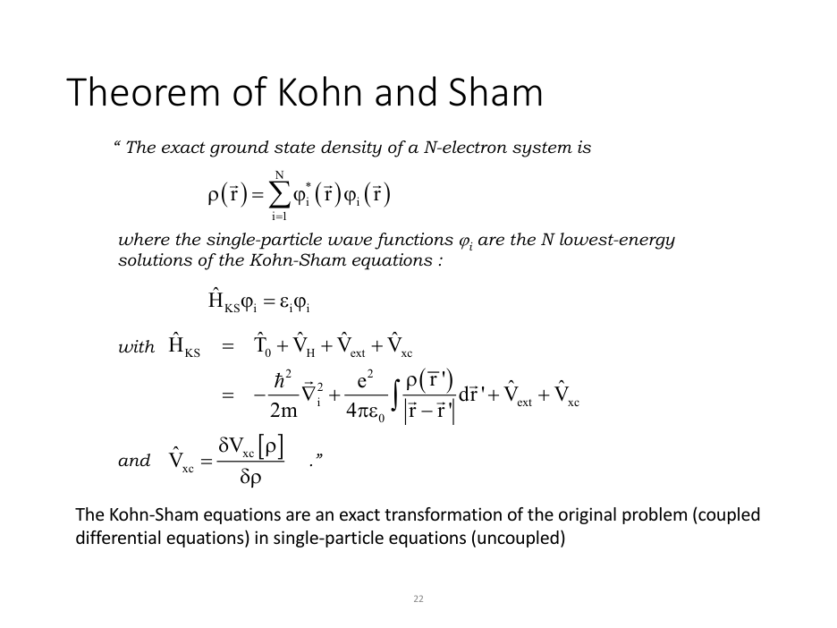
Kohn–Sham 定理：
"一个 N 电子体系的精确基态密度是
ρ(r) = Σi=1N φi*(r)φi(r)
其中单粒子波函数 φi 是 Kohn–Sham 方程能量最低的 N 个解：
ĤKSφi = εiφi
其中 ĤKS = T̂0 + V̂H + V̂ext + V̂xc = −(ħ²/2m)∇i² + (e²/4πε₀)∫ρ(r′)/|r−r′| dr′ + V̂ext + V̂xc
且 V̂xc = δVxc[ρ]/δρ。"
Kohn–Sham 方程是原问题（耦合的微分方程）到单粒子方程（非耦合的）的一个精确变换。
公式解析 · Kohn–Sham 哈密顿量（逐项）
| 符号 | 名称 | 含义 |
|---|---|---|
| φi | Kohn–Sham 轨道 | 一组"虚构的"无相互作用粒子的轨道，唯一的要求是：它们的密度 Σ|φi|² 恰好等于真实体系的密度 |
| εi | KS 轨道能 | KS 方程的本征值。严格说没有直接物理意义（只有 HOMO 的 ε 在精确泛函下等于 −IE），见第 3 讲 p47 警告 |
| T̂0 = −½∇² | 无相互作用动能 | 下标 0 表示"无相互作用体系的"动能。它和真实动能 T[ρ] 不一样——差值被塞进了 Vxc |
| V̂H | Hartree 势 | = ∫ρ(r′)/|r−r′|dr′：整团电子云在 r 点产生的经典静电势。就是第 2 讲 p85 的库仑算符 ΣĴj |
| r′ | 积分变量 | 跑遍所有"源电荷"的位置 |
| V̂ext | 外势 | 核吸引（p7），精确已知 |
| V̂xc | 交换-相关势 | 唯一的未知项。它负责：① 交换效应；② 相关效应；③ 真实动能与 T0 的差；④ 修正 VH 里的自相互作用 |
| δVxc[ρ]/δρ | 泛函导数 | 势 = 能量泛函对密度的泛函导数（p18）。讲义把能量泛函也写成 Vxc[ρ]，更常见的写法是 Exc[ρ] |
讲解 · Kohn–Sham 的天才想法
最大的困难在动能——动能占总能量的一半左右（位力定理，第 3 讲 p5），而且用密度直接表示动能极其困难（早期的 Thomas–Fermi 模型尝试过，连化学键都给不出）。
因为替身体系的电子没有相互作用，它的波函数精确地就是一个 Slater 行列式，动能 T0 可以用轨道精确地算出来（−½∇²）。这一步把动能的绝大部分（约 99%）精确地处理掉了。
于是总能量被重新拆分：
| 项 | 能否精确计算 | 约占总能量 |
|---|---|---|
| T0（无相互作用动能） | ✔ 用轨道算 | 大 |
| J（经典库仑排斥） | ✔ 用密度算 | 大 |
| ∫ρVext（核吸引） | ✔ 用密度算 | 最大（负） |
| Exc（交换-相关） | ✘ 必须近似 | 约 10%（交换为主） |
KS 的成功之处：把"未知的部分"从整个 FHK（约 50% 的能量）压缩到只剩 Exc（约 10%），而且这 10% 相对容易近似。
讲义最后一句：KS 方程是原问题的精确变换。
如果 Vxc 是精确的，KS-DFT 就给出精确的基态能量和密度——没有任何近似。所有误差都来自 Vxc 的近似。
对比 HF：即使完备基组，HF 也有固有误差（丢了相关能）。DFT 原则上可以精确，HF 原则上不能。这是两者理论地位的根本区别。
看 KS 哈密顿量：VH 和 Vxc 都依赖于 ρ，而 ρ 又由轨道 φi 算出——和 HF 一模一样的"鸡生蛋"困境（第 2 讲 p85）。所以解法也一样：
猜 ρ → 建 ĤKS → 对角化得 φi → 算新 ρ → 重复直到自洽。
第 3 讲讲的一切 SCF 技术（DIIS、level shift、基组、RI 近似）在 DFT 里原封不动地适用。这就是为什么 Gaussian 里 #p hf 和 #p b3lyp 只差一个关键词。
DFT 多出来的一件事：Vxc 一般没有解析积分，要在数值格点上积分——这就是第 3 讲 p4 的 integral=(grid=ultrafine)，也是本讲 p3 提纲里"数值积分"指的东西。
- 写出 KS 方程，逐项说明含义；指出唯一未知的是 Vxc
- KS 的核心思想：用无相互作用替身体系重现真实密度
- 为什么说 KS 方程是"精确变换"；误差从哪里来
p23Hartree–Fock 与 DFT 的哈密顿量并排对比

Hartree–Fock：H = −Σi∇²/mi − Σi,j(eZi)e/|Ri−rj| + ½Σi≠je²/|ri−rj|
- 有动能的电子
- 受原子核的库仑势作用
- 与其他电子有库仑相互作用
DFT：H = −Σi∇²/mi − Σi,j(eZi)e/|Ri−rj| + VH + Vxc
- 有动能的准粒子
- 受原子核的库仑势作用
- 与所有其他准粒子的平均、静态分布相互作用
- 受一个神秘的"交换-相关"势的影响
数学简单得多，但你必须知道 Vxc。
讲解 · 前两项完全一样，区别全在第三项
| Hartree–Fock 的有效单电子算符 | Kohn–Sham 的有效单电子算符 | |
|---|---|---|
| 动能 | −½∇² | −½∇²（同） |
| 核吸引 | Vext | Vext（同） |
| 库仑 | ΣjĴj | VH（同一个东西，写法不同） |
| 交换 | −ΣjK̂j：精确，但非局域（第 2 讲 p85） | Vxc(r)：近似，但局域（只是一个普通的函数） |
| 相关 | 完全没有 |
一句话：HF 精确地处理交换、完全不处理相关；DFT 近似地同时处理交换和相关。
"准粒子 (quasi-particles)"这个词是在提醒你：KS 轨道描述的不是真实电子，而是 p22 那个替身体系里的虚构粒子。
- HF 与 KS 算符的逐项对比；交换在两者中如何处理；相关在两者中如何处理
p24近似交换-相关泛函：LDA、LSDA、GGA、meta-GGA

近似：选择 XC 泛函。Vxc[ρ] 一定存在一个唯一的表达式，但它是未知的。
局域密度近似 (LDA) 假定：Vxc[ρ] = VxcLDA[ρ] = ∫ρ(r)εxc(ρ(r))dr
局域自旋密度近似 (LSDA) 假定：VxcLSDA[ρ↑,ρ↓] = ∫ρ(r)εxc(ρ↑(r),ρ↓(r))dr
推广：广义梯度近似 GGA：VxcGGA[ρ,∇ρ] = ∫ρ(r)εxc(ρ↑,ρ↓,∇ρ↑,∇ρ↓)dr
Meta-GGA 还包含密度的二阶及更高阶导数。
这实际上相当于对真实的 XC 泛函构造越来越精确的 Taylor 型近似。
公式解析 · 所有近似共享的形式
| 符号 | 名称 | 含义 |
|---|---|---|
| εxc | 每个电子的 XC 能量密度 | 希腊字母 epsilon。一个普通函数，只依赖点 r 附近的信息——这是"局域"的意思 |
| ρ(r)·εxc | XC 能量的空间密度 | "这一点有多少电子" × "每个电子贡献多少 XC 能" |
| ρ↑, ρ↓ | α、β 自旋密度 | LSDA 起分开处理——开壳层体系必需 |
| ∇ρ | 密度梯度 | 密度在该点变化得多快（一阶导数） |
| ∇²ρ 或 τ | 拉普拉斯 / 动能密度 | meta-GGA 用的额外信息。τ = ½Σ|∇φi|² |
讲解 · 从 LDA 到 meta-GGA，每一级多看了一点"邻居信息"
| 级别 | 依赖的变量 | 物理模型 | 特点 |
|---|---|---|---|
| LDA | ρ | 均匀电子气：假装每一点附近的电子密度都是均匀的 | 对固体（金属）还行；对分子：严重高估结合能（过度成键） |
| LSDA | ρ↑, ρ↓ | 自旋极化的均匀电子气 | 能处理开壳层 |
| GGA | + ∇ρ | 考虑密度的不均匀性 | 对分子大幅改善。PBE、BLYP、BP86 |
| meta-GGA | + ∇²ρ 或 τ | 更精细的局部信息 | TPSS、M06-L、SCAN |
均匀电子气 (uniform electron gas, jellium) 是唯一一个 XC 能被精确算出的多电子体系：一堆电子在均匀的正电荷背景里。它的交换能有解析式（p29 那个 ρ4/3），相关能由 Ceperley–Alder 的量子蒙特卡罗计算（1980）精确给出并拟合成公式（VWN、PW92）。
LDA 的假设就是：分子里每一个小体积元，都当成"密度为该点 ρ 的均匀电子气"来处理。对金属（电子本来就很均匀）效果好；对分子（密度在核附近剧烈变化）就不太好——所以要加梯度修正。
- LDA、GGA、meta-GGA 各依赖哪些变量；LDA 背后的物理模型（均匀电子气）
- "局域"的含义：εxc 只依赖点 r 附近的信息
p25–26杂化泛函与早期性能数据
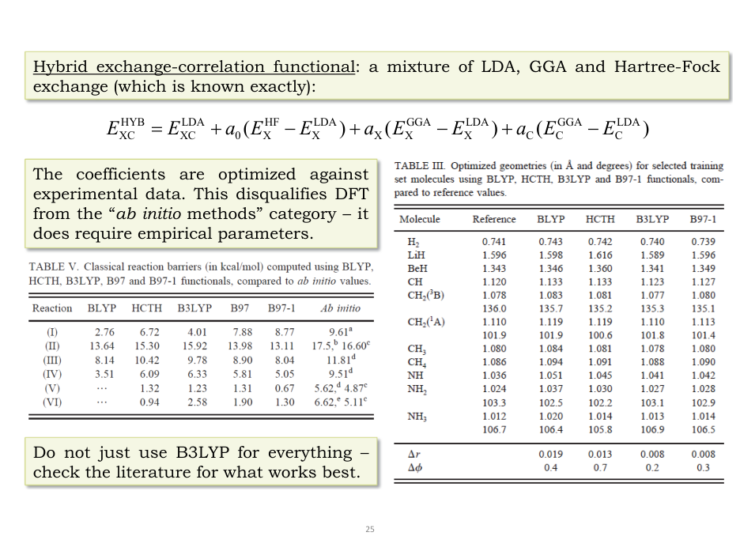
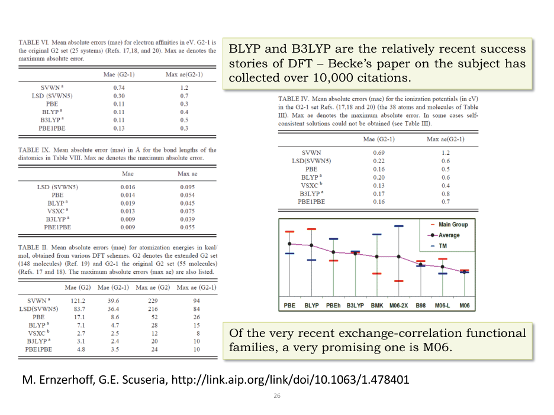
杂化交换-相关泛函：LDA、GGA 与 Hartree–Fock 交换（精确已知）的混合：
EXCHYB = EXCLDA + a0(EXHF − EXLDA) + aX(EXGGA − EXLDA) + aC(ECGGA − ECLDA)
这些系数是对照实验数据优化的。这使得 DFT 不能归入"从头算 (ab initio) 方法"一类——它确实需要经验参数。
（表 V：BLYP、HCTH、B3LYP、B97、B97-1 算的经典反应能垒（kcal/mol）与从头算值对比；表 III：训练集分子的优化几何（Å 与度）。）
不要什么都用 B3LYP——查文献看什么最合适。
BLYP 和 B3LYP 是 DFT 相对近期的成功故事——Becke 关于这个主题的论文已被引用超过 10 000 次。
在非常新的交换-相关泛函家族中，一个很有前景的是 M06。
（表：电子亲和能、电离能、双原子键长、原子化能的平均绝对误差；以及 PBE、BLYP、PBEh、B3LYP、BMK、M06-2X、B98、M06-L、M06 对主族与过渡金属的误差图。）
公式解析 · 杂化泛函的通用式
| 符号 | 名称 | 含义 |
|---|---|---|
| 下标 X / C | 交换 / 相关 | X = exchange，C = correlation。XC = 两者之和 |
| EXHF | HF 交换能 | 用 KS 轨道按 HF 的公式算出来的精确交换能（即 −½ΣKij）。"精确已知"指公式精确，不是指它就是正确的 XC 能 |
| a0 | HF 交换比例 | 掺多少精确交换。B3LYP 取 0.20，PBE0 取 0.25 |
| aX | 交换梯度修正系数 | B3LYP 取 0.72 |
| aC | 相关梯度修正系数 | B3LYP 取 0.81 |
| 括号 (A − B) | "修正量" | 每一项都是"用更好的替换 LDA"的差值，乘上一个比例——系数为 0 就退回 LDA，为 1 就完全换掉 |
讲解 · 为什么要"掺"HF 交换
| 纯 DFT 交换（LDA/GGA） | 纯 HF 交换 | |
|---|---|---|
| 自相互作用 | 有误差（p33）→ 过度离域 | 无误差 |
| 与相关的配合 | DFT 交换和 DFT 相关的误差恰好部分抵消（都描述了"近程的"交换-相关空穴） | 和 DFT 相关配合不好——HF 交换空穴是非局域的 |
| 典型偏差 | 能垒偏低、带隙偏小 | 能垒偏高、带隙偏大 |
Becke (1993) 的想法：两边往相反方向错，混在一起就更接近真值。系数用实验数据（G2 数据集的原子化能、电离能等）拟合出来。
- "This disqualifies DFT from the ab initio category"：含拟合参数 ⟹ 严格说不是"从头算"。HF、MP2、CCSD 不含任何经验参数；B3LYP 有 3 个。（考试可能问："DFT 是从头算方法吗？"答：原理上是，实际使用的杂化泛函含经验参数，严格说不是。）
- "Do not just use B3LYP for everything"：B3LYP 缺色散、低估能垒（表 V 显示所有泛函的能垒都低于从头算值）、对过渡金属表现一般。现代推荐：有机体系用 ωB97X-D、M06-2X、B3LYP-D3(BJ)；过渡金属用 TPSSh、PBE0。
| 数据 | 结论 |
|---|---|
| 表 III：键长误差 Δr | B3LYP 0.008 Å、BLYP 0.019 Å。杂化泛函的几何非常好——和第 4 讲 p27 的 CCSD(T) 0.013 Å 相当甚至更好（这里是不同测试集，但数量级说明问题） |
| 表 V：反应能垒 | 所有泛函都低估能垒（例：反应 I，从头算 9.61，BLYP 只有 2.76）。这是自相互作用误差的典型后果（p33）：过渡态电子更离域，SIE 让它被过度稳定 |
| p26 原子化能表 | LSD(SVWN) 误差 36–121 kcal/mol，PBE 8.6–17，B3LYP 2.4–3.1。LDA → GGA → 杂化，每一级都是量级上的改进 |
| p26 M06 家族图 | M06 系列对主族和过渡金属都较均衡——但它们对积分格点很敏感（第 3 讲 p4 拓展） |
- 杂化泛函的构造思想；为什么它比纯 GGA 好
- 为什么说含经验参数的 DFT 不属于严格的 ab initio 方法
p27DFT 小结
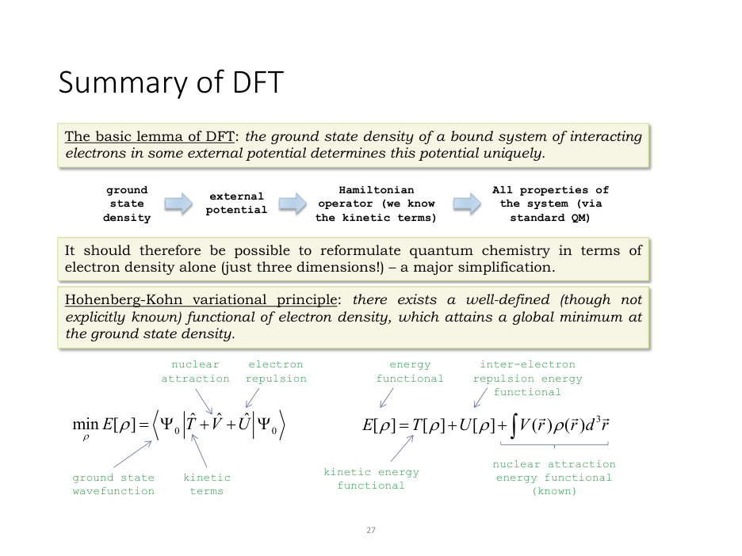
DFT 的基本引理：在某个外势中、有相互作用电子组成的束缚体系，其基态密度唯一地决定这个外势。
基态密度 → 外势 → 哈密顿算符（动能项我们知道） → 体系的所有性质（通过标准量子力学）
因此应该可以只用电子密度（只有三维！）来重新表述量子化学——一个重大的简化。
Hohenberg–Kohn 变分原理：存在一个定义明确（虽然没有显式已知）的电子密度泛函，它在基态密度处取得全局最小值。
minρ E[ρ] = ⟨Ψ₀|T̂ + V̂ + Û|Ψ₀⟩ （Ψ₀ = 基态波函数；T̂ 动能项；V̂ 核吸引；Û 电子排斥）
E[ρ] = T[ρ] + U[ρ] + ∫V(r)ρ(r)d³r （能量泛函 = 动能泛函 + 电子间排斥能泛函 + 核吸引能泛函（已知））
讲解 · 这一页把 p7–p20 压缩成了两句话
| 讲义说法 | 对应哪个定理 | 本讲在哪 |
|---|---|---|
| "基态密度唯一决定外势" | HK 第一定理 | p11–p17 |
| "泛函在基态密度处取全局最小" | HK 第二定理 | p19–p20 |
| 符号 | 名称 | 含义 |
|---|---|---|
| T[ρ] | 动能泛函 | 未知 → KS 用 T0 近似掉大部分 |
| U[ρ] | 电子排斥泛函 | 讲义 p20 叫 Vee，这里叫 U——同一个东西 |
| V(r) | 外势 | = Vext，已知 |
| d³r | 体积元 | = dxdydz |
- "DFT 的基本引理"原文及其推理链（密度 → 外势 → 哈密顿量 → 一切性质）
p28Walter Kohn，"DFT 之父"
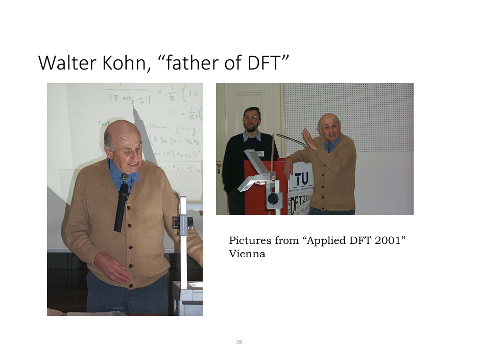
Walter Kohn，"DFT 之父"。照片来自 "Applied DFT 2001" 维也纳会议。
Kohn 与 Pople 共获 1998 年诺贝尔化学奖（第 1 讲 p9）。两篇奠基论文：Hohenberg & Kohn, Phys. Rev. 136, B864 (1964)；Kohn & Sham, Phys. Rev. 140, A1133 (1965)。后者是物理学史上被引用最多的论文之一。
p29具体泛函：LDA 交换、Becke88 交换、LYP 相关
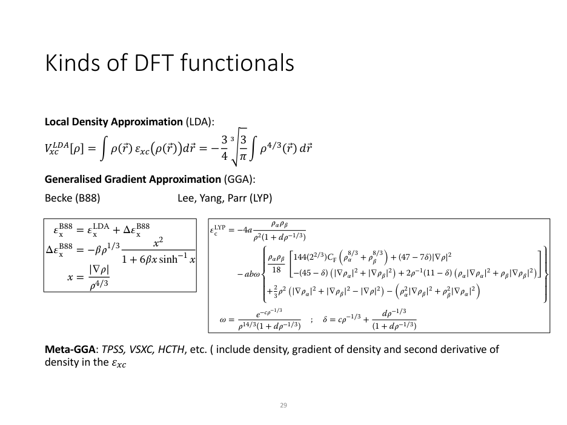
局域密度近似 (LDA)：VxcLDA[ρ] = ∫ρ(r)εxc(ρ(r))dr = −(3/4)(3/π)1/3∫ρ4/3(r)dr
广义梯度近似 (GGA)：Becke (B88) 交换、Lee–Yang–Parr (LYP) 相关（两个框里的公式）
Meta-GGA：TPSS、VSXC、HCTH 等（在 εxc 中包含密度、密度梯度和密度的二阶导数）
公式解析 · LDA 交换（唯一需要记住形式的一个）
| 符号 | 名称 | 含义 |
|---|---|---|
| ρ4/3 | 密度的 4/3 次方 | 这个指数可以由量纲分析直接得到（见下） |
| −(3/4)(3/π)1/3 | 常数 | ≈ −0.7386。由均匀电子气精确推出 |
| 负号 | — | 交换能永远是负的（稳定化，Fermi 空穴） |
均匀电子气里，电子的平均间距 rs ∝ ρ−1/3（密度越大，间距越小）。交换能是库仑型的，每个电子的交换能 ∝ 1/rs ∝ ρ1/3。
总交换能 = ∫（电子数密度）×（每个电子的交换能）= ∫ρ · ρ1/3 = ∫ρ4/3 ✔
所以 εxLDA ∝ −ρ1/3。
公式解析 · B88 交换（看结构，不用背）
| 符号 | 名称 | 含义 |
|---|---|---|
| x | 约化密度梯度 | 无量纲的"不均匀程度"。均匀电子气 x=0，修正项消失，退回 LDA |
| β | 经验参数 | = 0.0042，拟合惰性气体原子的交换能得到——这就是 GGA 的"经验性" |
| sinh⁻¹ | 反双曲正弦 | 保证在远离分子处（ρ→0，x→∞）有正确的渐近行为 |
LYP 相关（右框）：由 Colle–Salvetti 的氦原子相关能公式改写而来，参数 a, b, c, d 拟合氦原子数据。LYP 的特点是它是从一个"单电子对"模型推来的，所以对单个电子正确地给出零相关能——没有相关部分的自相互作用。公式很长，考试不会要求背。
泛函名一般是 交换部分 + 相关部分 拼起来：
| 名字 | 交换 | 相关 |
|---|---|---|
| BLYP | Becke 88 | Lee–Yang–Parr |
| BP86 | Becke 88 | Perdew 86 |
| PBE | Perdew–Burke–Ernzerhof | PBE |
| SVWN | Slater (= LDA 交换) | Vosko–Wilk–Nusair (LDA 相关) |
| B3LYP | Becke 3 参数杂化 | LYP |
- LDA 交换 ∝ ∫ρ4/3；GGA 在 LDA 基础上加梯度修正，均匀极限下退回 LDA
- 泛函名的构成（交换 + 相关）
p30★ B3LYP 与双杂化泛函
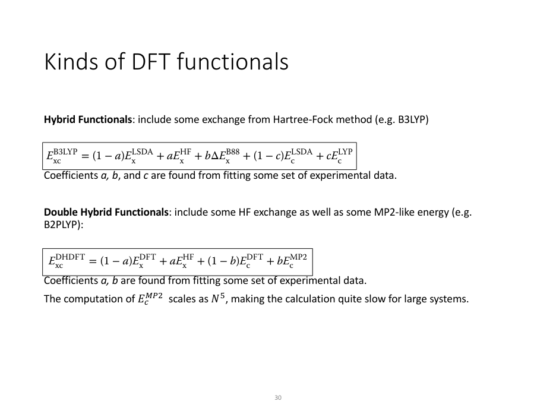
杂化泛函：包含一部分来自 Hartree–Fock 方法的交换（如 B3LYP）
ExcB3LYP = (1−a)ExLSDA + aExHF + bΔExB88 + (1−c)EcLSDA + cEcLYP
系数 a、b、c 通过拟合一组实验数据得到。
双杂化泛函：包含一部分 HF 交换以及一部分类似 MP2 的能量（如 B2PLYP）：
ExcDHDFT = (1−a)ExDFT + aExHF + (1−b)EcDFT + bEcMP2
系数 a、b 通过拟合一组实验数据得到。EcMP2 的计算标度为 N⁵，使得大体系的计算相当慢。
公式解析 · B3LYP（可能要求写出）
交换部分 相关部分
| 符号 | 名称 | 数值与含义 |
|---|---|---|
| a | HF 交换比例 | 0.20——B3LYP 里 20% 是精确交换，80% 是 LSDA 交换 |
| b | B88 梯度修正比例 | 0.72 |
| c | LYP 相关比例 | 0.81——81% 用 GGA 的 LYP，19% 用 LSDA 相关（VWN） |
| "3" | 名字里的 3 | 就是这 3 个经验参数 |
| ExLSDA | LDA 交换 | p29 的 ∫ρ4/3 公式（自旋极化版） |
| ΔExB88 | B88 梯度修正 | p29 左框的修正项（注意是修正量，不是完整的 B88） |
LSDA 占 (1−a) = 0.80，HF 占 a = 0.20，加起来 = 1 ✔——所以"交换能的总量"是完整的一份，只是来源比例不同。B88 那一项是在 LSDA 基础上加的梯度修正，不计入份额。
相关部分：(1−c) + c = 1 ✔。
公式解析 · 双杂化泛函
| 符号 | 名称 | 含义 |
|---|---|---|
| a | HF 交换比例 | B2PLYP 取 0.53（远高于 B3LYP 的 0.20） |
| b | MP2 相关比例 | B2PLYP 取 0.27 |
| EcMP2 | MP2 型相关能 | 用 KS 轨道和轨道能代入第 4 讲 p36 的 MP2 公式算出来——需要虚轨道，所以 p36 表里说双杂化用到了 "Virtual orbitals" |
| 泛函类型 | 交换 | 相关 |
|---|---|---|
| GGA | 纯 DFT | 纯 DFT |
| 杂化 | DFT + HF | 纯 DFT |
| 双杂化 | DFT + HF | DFT + MP2 |
代价：MP2 部分标度 N⁵（第 4 讲 p40），所以双杂化比普通杂化慢一个数量级；收益：p37 表中 B2PLYP 在大多数指标上是所有 DFT 里最好的，接近 CCSD(T)。
- 写出 B3LYP 的构成；"3"指什么；a = 0.20 意味着什么
- 双杂化与杂化的区别；为什么双杂化是 O(N⁵)
p31可系统改进性
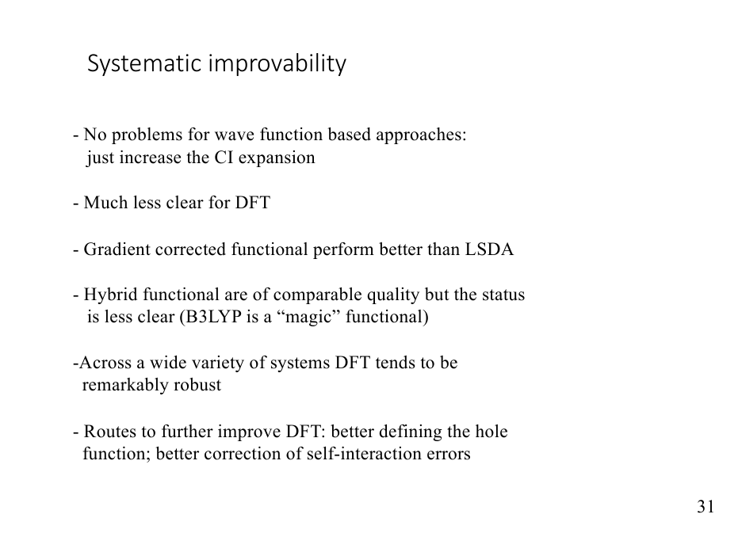
- 对基于波函数的方法没有问题：只要扩大 CI 展开
- 对 DFT 就不那么清楚
- 梯度校正泛函的表现优于 LSDA
- 杂化泛函质量相当，但地位不那么清楚（B3LYP 是一个"魔法"泛函）
- 在各种各样的体系上，DFT 都表现得相当稳健
- 进一步改进 DFT 的途径：更好地定义空穴函数；更好地校正自相互作用误差
讲解 · DFT 最大的理论弱点
| 波函数方法 | DFT | |
|---|---|---|
| 改进路径 | 明确的阶梯：HF → MP2 → CCSD → CCSD(T) → … → FCI，每一步都更接近精确 | 换泛函，但不保证更好 |
| 能判断收敛吗 | 能：看结果随级别升高是否稳定 | 不能：没有"更高一级"可以用来检验 |
| 误差可控吗 | 可以估计 | 只能靠和实验/高级计算的 benchmark |
"B3LYP 是魔法泛函"：它的 3 个参数是 1993 年针对一个小数据集拟合的，却在此后 30 年里对大量从未见过的体系表现意外地好——没有人能从理论上完全解释为什么。这正是"缺乏系统改进性"的写照：你不知道它为什么对，所以也不知道它什么时候会错。
"空穴函数 (hole function)"：交换-相关空穴描述"在某处有一个电子时，它周围其他电子被排开形成的空洞"（第 2 讲 p70 的 Fermi 空穴 + 库仑空穴）。Exc 本质上就是电子与自己的 XC 空穴之间的相互作用能。更好地建模这个空穴，是构造新泛函的主要理论途径。
- 对比波函数方法与 DFT 的"可系统改进性"
p32DFT 的最坏情形
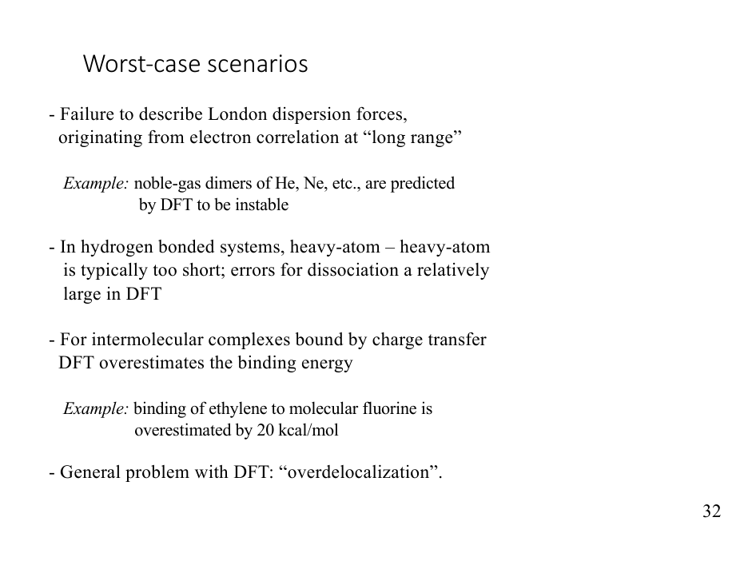
- 无法描述 London 色散力——它源自"长程"的电子相关。例：He、Ne 等惰性气体二聚体被 DFT 预测为不稳定
- 在氢键体系中，重原子-重原子距离通常太短；DFT 对解离的误差相对较大
- 对于靠电荷转移结合的分子间复合物，DFT 高估结合能。例：乙烯与 F₂ 的结合被高估了 20 kcal/mol
- DFT 的普遍问题："过度离域 (overdelocalization)"
讲解 · 四种失败，追到两个根源
| 失败现象 | 根源 | 修补方法 |
|---|---|---|
| 算不出色散 （He₂、π–π 堆积） | 泛函是局域的：εxc 只看点 r 附近。两个分子相距较远、电子云不重叠时，局域泛函"看不到"对方 | 色散校正 D3/D4（p35） |
| 氢键太短 | 自相互作用误差 → 过度离域 → 电荷转移被夸大 | 杂化 / 范围分离泛函 |
| 电荷转移复合物结合过强 | 同上 | 范围分离泛函（p34） |
| 过度离域 | 自相互作用误差（p33） | 杂化、范围分离、SIC |
色散力来自两个分子电子云的瞬时涨落相互关联：A 的电子云某一瞬间偏向一边形成瞬时偶极，诱导 B 产生反向偶极，两者吸引。能量 ∝ −C6/R⁶。
这需要"A 处的电子知道 B 处电子在干什么"——一种非局域的关联。而 LDA/GGA 在每个点只看本地的 ρ 和 ∇ρ。当 A、B 之间的密度几乎为零时，泛函在两者之间"看"到的就是真空，自然给不出吸引。
讲义的例子：He₂ 真实有一个约 0.02 kcal/mol 的极浅势阱（靠色散），很多 GGA 给出纯排斥曲线——"predicted to be unstable"。
- 列举 DFT 的典型失败（色散、电荷转移、过度离域）及其根源
p33★ 自相互作用误差 (Self-Interaction Error)
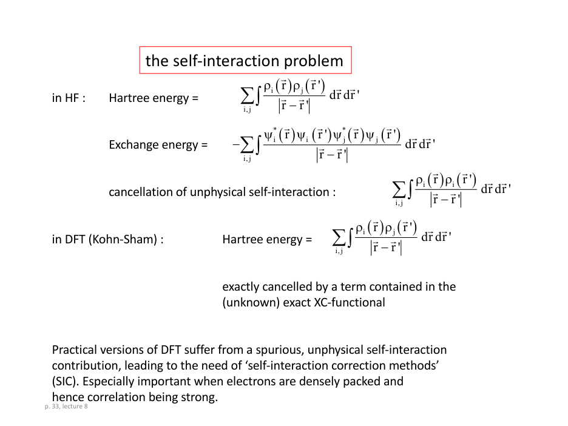
自相互作用问题
在 HF 中：Hartree 能 = Σi,j∫ρi(r)ρj(r′)/|r−r′| drdr′；交换能 = −Σi,j∫ψi*(r)ψi(r′)ψj*(r)ψj(r′)/|r−r′| drdr′
非物理的自相互作用被抵消：Σi∫ρi(r)ρi(r′)/|r−r′| drdr′
在 DFT (Kohn–Sham) 中：Hartree 能 = Σi,j∫ρiρj/|r−r′|，被（未知的）精确 XC 泛函中的某一项精确抵消。
实际使用的 DFT 版本存在一个虚假的、非物理的自相互作用贡献，因此需要"自相互作用校正方法"(SIC)。当电子排列紧密、因而相关很强时尤其重要。
公式解析 · 自相互作用从哪里来
| 符号 | 名称 | 含义 |
|---|---|---|
| ρi(r) | 第 i 个轨道的密度 | = |ψi(r)|² |
| Σi,j | 对所有轨道对求和 | 包括 i = j！即"轨道 i 的电荷云和它自己的电荷云相互排斥" |
| i = j 项 | 自相互作用 | 一个电子和自己排斥——物理上不存在 |
| ½ | — | 讲义省略了这个 ½，不影响论证 |
讲解 · HF 自动消掉了它，近似 DFT 消不干净
回忆第 3 讲 p43：同一个轨道的库仑积分和交换积分定义完全一样，Jii = Kii。HF 能量里是 Σ(Jij − Kij)，所以 i=j 的项：
KS 的 Hartree 能 EH 包含自相互作用 Jii。理论上精确的 Exc 里有一项恰好等于 −Jii 把它抵消。
但 LDA/GGA 是局域近似，它给出的"自交换"不等于 −Jii，抵消不干净，剩下一个正的残差——电子多排斥了自己一点。
最干净的检验：氢原子（只有 1 个电子，不应有任何电子-电子相互作用）：
| 方法 | H 原子能量 (Hartree) | 说明 |
|---|---|---|
| 精确 | −0.5000 | |
| HF | −0.5000 | 自相互作用精确抵消 ✔ |
| LDA (SVWN) | ≈ −0.479 | 一个电子和自己排斥 ⟹ 能量偏高 |
| B3LYP | ≈ −0.502 | 误差较小但不为零 |
| 现象 | SIE 怎么导致它 |
|---|---|
| 反应能垒偏低（p25 表 V） | 过渡态的电子更离域 → SIE 让离域态被人为稳定 → 过渡态能量偏低 |
| 带隙 / HOMO-LUMO gap 偏小 | 占据轨道被自排斥抬高，−εHOMO 远小于真实 IE |
| 电荷转移结合过强（p32） | 电子"部分转移"的离域态被过度稳定 |
| H₂⁺ 解离错误 | 拉开后电子应该完全在一边，SIE 让"半个电子在左、半个在右"更低 → 解离极限错误 |
| 阴离子不束缚 | 多余的电子被自排斥推开，LDA/GGA 常预测小阴离子不稳定 |
| TD-DFT 的电荷转移激发能偏低 | p34 讲的问题 |
为什么杂化泛函好一点：掺了 20% HF 交换 → 抵消了 20% 的自相互作用。范围分离泛函在长程用 100% HF 交换，效果更好。
- 解释什么是自相互作用误差；为什么 HF 没有而近似 DFT 有（Jii = Kii）
- SIE 导致的后果：过度离域、能垒偏低、带隙偏小
p34范围分离（长程校正）泛函
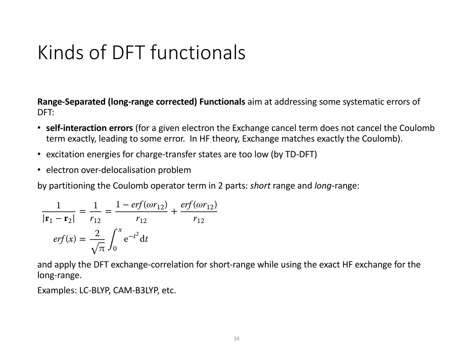
范围分离（长程校正）泛函旨在解决 DFT 的一些系统性误差：
- 自相互作用误差（对某个电子，交换抵消项不能精确抵消库仑项，导致误差。在 HF 理论中，交换与库仑精确匹配。）
- （TD-DFT 算的）电荷转移态的激发能太低
- 电子过度离域问题
做法是把库仑算符拆成两部分：短程和长程：
1/|r₁−r₂| = 1/r₁₂ = [1 − erf(ωr₁₂)]/r₁₂ + erf(ωr₁₂)/r₁₂， erf(x) = (2/√π)∫₀xe−t²dt
对短程用 DFT 交换-相关，对长程用精确的 HF 交换。
例子：LC-BLYP、CAM-B3LYP 等。
公式解析 · 库仑算符的范围分离
短程 SR：用 DFT 交换 长程 LR：用 HF 交换
| 符号 | 名称 | 含义 |
|---|---|---|
| erf(x) | 误差函数 | error function：一条 S 形曲线，x=0 时为 0，x→∞ 时趋于 1。它充当一个"平滑开关" |
| ω | 范围分离参数 | 单位 Bohr⁻¹。1/ω 大致是"短程与长程的分界距离"。LC-ωPBE 约 0.4，CAM-B3LYP 0.33 |
| r12 | 电子间距 | — |
| t | 积分哑变量 | 只出现在 erf 的定义里 |
讲解 · 为什么"短程 DFT + 长程 HF"是对的组合
| 距离 | 谁更合适 | 理由 |
|---|---|---|
| 短程 | DFT 交换 | DFT 交换与 DFT 相关在短程误差互相抵消（p25 讲过），效果好 |
| 长程 | HF 交换 | 精确的交换势在远处应该按 −1/r 衰减（一个电子离开分子时，感受到剩下的 N−1 个电子 + Z 个质子，净电荷 +1）。GGA 的交换势是指数衰减的，太快了；HF 交换恰好给出正确的 −1/r |
| 场景 | 原因 |
|---|---|
| TD-DFT 算电荷转移激发 | B3LYP 可能把电荷转移激发能低估 1–2 eV，甚至预测出不存在的低能"幽灵态"。CAM-B3LYP、ωB97X-D 基本解决这个问题 |
| 给体-受体体系（有机光伏、染料） | 同上 |
| 阴离子、Rydberg 激发 | 需要正确的长程势（本讲 p38 建议 4 也提到阴离子要用 range-corrected 泛函） |
| 极化率、超极化率 | GGA 严重高估长链分子的极化率 |
Gaussian 关键词：CAM-B3LYP、wB97XD、LC-wPBE。
- 范围分离泛函的构造：用 erf 把 1/r12 分成短程 + 长程；短程 DFT、长程 HF
- 它解决的三个问题：SIE、电荷转移激发能过低、过度离域
p35色散校正泛函
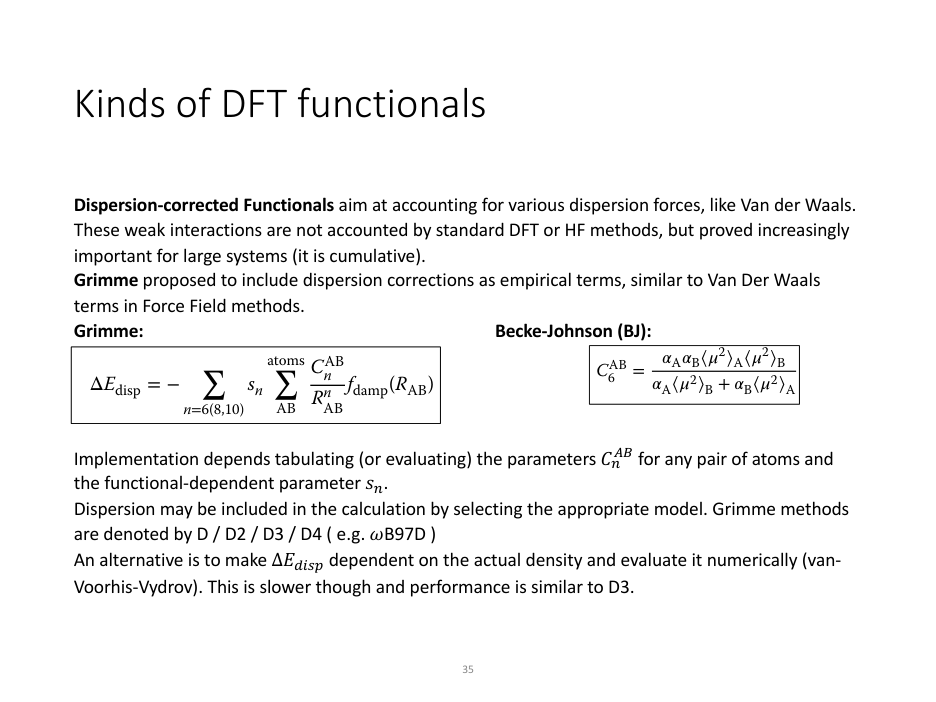
色散校正泛函旨在计入各种色散力，如范德华力。标准 DFT 或 HF 方法不包含这些弱相互作用，但它们对大体系越来越重要（它是累积的）。
Grimme 提出以经验项的形式加入色散校正，类似于力场方法中的范德华项。
Grimme：ΔEdisp = −Σn=6(8,10) sn ΣABatoms (CnAB/RABn)·fdamp(RAB)
Becke–Johnson (BJ)：C6AB = αAαB⟨μ²⟩A⟨μ²⟩B / (αA⟨μ²⟩B + αB⟨μ²⟩A)
实现依赖于为任意一对原子制表（或计算）参数 CnAB，以及与泛函有关的参数 sn。
通过选择合适的模型把色散加入计算。Grimme 方法记作 D / D2 / D3 / D4（如 ωB97D）。
另一种做法是让 ΔEdisp 依赖真实密度并数值计算（van Voorhis–Vydrov）。这更慢，但表现与 D3 相近。
公式解析 · Grimme 色散校正
| 符号 | 名称 | 含义 |
|---|---|---|
| ΔEdisp | 色散校正能 | 直接加到 DFT 总能量上，不改变电子密度 |
| RAB | 原子 A、B 的距离 | 只需要几何坐标——所以几乎不花计算时间 |
| C6AB | 色散系数 | London 色散的强度，−C6/R⁶ 是色散力的经典形式。D3 中它还依赖原子的配位数（sp³ 碳和 sp² 碳不同） |
| n = 6, 8, (10) | 展开阶数 | R⁻⁶ 是偶极-偶极，R⁻⁸ 是偶极-四极……D2 只有 n=6，D3 有 6 和 8 |
| sn | 标度因子 | 依赖于所用泛函——B3LYP-D3 和 PBE-D3 的 s8 不同，因为每个泛函自己"已经包含"的中程相关不同 |
| fdamp | 阻尼函数 | 短距离时趋于 0，长距离时趋于 1。见下 |
| αA | 原子极化率 | BJ 公式中：原子的电子云有多"软" |
| ⟨μ²⟩A | 偶极矩平方期望 | BJ 公式中：交换空穴偶极矩（衡量瞬时偶极的大小） |
① R→0 时 1/R⁶ → ∞，会让原子"塌缩"到一起；② 短程的相关 DFT 泛函已经算过了，再加一遍会重复计算。
阻尼函数在短程把校正"关掉"，只在中长程起作用。"D3(BJ)" 中的 BJ 就是指 Becke–Johnson 形式的阻尼（在 R→0 时趋于一个有限常数而不是 0），比原来的"零阻尼"表现更好。
单个原子对的色散只有零点几 kcal/mol，但它对所有原子对求和，数目 ∝ N²。
| 体系 | 色散对结合能的贡献 |
|---|---|
| 苯二聚体（π–π 堆积） | 约 −3 kcal/mol，几乎是全部结合能（不加 D3 算出来是排斥的） |
| 蛋白-配体结合 | 可达 −20 ~ −50 kcal/mol |
| 石墨层间 | 约 −50 meV/原子，全部来自色散 |
实用规则（p38 建议 5）：现代计算里，除非有特殊理由，默认总是加 D3(BJ)。它几乎不增加时间。Gaussian：empiricaldispersion=gd3bj；ORCA：! D3BJ。第 3 讲 p5 的 Gaussian 输出里那行 "Adding Grimme-D3(BJ) dispersion" 就是它。
- 为什么标准 DFT 缺色散；Grimme D3 的形式（−C6/R⁶ × 阻尼）
- 阻尼函数的作用；为什么色散对大体系更重要
p36★ 泛函的分类：Jacob 阶梯

表：交换-相关泛函的 Perdew 分类。斜体表示包含范围分离 XC 势，粗体表示包含色散。
| 级 | 名称 | 变量 | 例子（参数少） | 例子（参数多） |
|---|---|---|---|---|
| 1 | 局域密度 | ρ | LDA, LSDA, Xα | |
| 2 | GGA | ρ, ∇ρ | PW91, PBE, BLYP, OLYP, HCTH, KT3 | SOGGA11, N12 |
| 3 | Meta-GGA | ρ, ∇ρ, ∇²ρ 或 τ | BR, B95, PKZB, TPSS, τ-HCTH, B97M-V | VSXC, M11L, MN12L |
| 4 | 杂化 GGA | + HF 交换 | BHLYP, B3LYP, B3PW91, O3LYP, PBE0, TPSSh, τ-HCTH-hyb, HSE, CAM-B3LYP, ωB97X-V | B97-3, SOGGA11X, M11, N12SX, MN12SX, ωB97X, ωB97XD |
| 5 | 双杂化 | + HF 交换 + 虚轨道 | B2PLYP, PBE0-DH |
讲解 · "Jacob 天梯"——每往上一级，多用一种信息
| 级 | 新增信息 | 计算代价 | 典型用途 |
|---|---|---|---|
| 1 | ρ | 最低 | 固体（金属）；分子上已基本不用 |
| 2 | ∇ρ | ≈ LDA | PBE：固体计算的默认（VASP 作业会用）；大体系几何优化 |
| 3 | τ | ≈ GGA | 过渡金属（TPSS、M06-L） |
| 4 | HF 交换 | 比 GGA 慢数倍（要算非局域交换积分） | 分子计算的主力：B3LYP、PBE0、ωB97X-D |
| 5 | 虚轨道 / MP2 | O(N⁵) | 高精度热化学 |
表格把每一级再分成两类：
- 参数少（非经验/少经验）：尽量从物理约束（均匀电子气极限、渐近行为、精确条件）推出来。PBE 零个经验参数、TPSS 也基本如此。可迁移性好。
- 参数多（高度参数化）：Minnesota 家族（M06、M11、MN12）有几十个拟合参数。在训练集覆盖的体系上很准，出了训练集可能表现不稳定。
- Jacob 阶梯五级，每级的名称、新增变量、代表泛函——很可能出填表题
- B3LYP 属于第几级（第 4 级，杂化 GGA）；B2PLYP 属于第几级（第 5 级）
p37DFT 与波函数方法的性能对比表
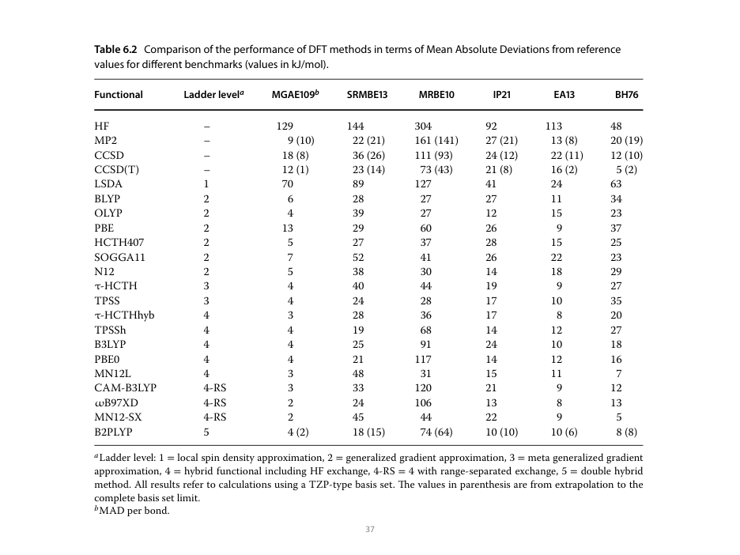
表：各 DFT 方法在不同基准测试上相对参考值的平均绝对偏差（单位 kJ/mol）。
a 阶梯级别：1 = 局域自旋密度近似，2 = 广义梯度近似，3 = meta-GGA，4 = 含 HF 交换的杂化泛函，4-RS = 带范围分离交换的 4，5 = 双杂化方法。所有结果使用 TZP 型基组。括号中的值来自完备基组外推。
b 每根键的 MAD。
讲解 · 先搞懂六列测的是什么
| 列 | 全称 | 测的是什么 |
|---|---|---|
| MGAE | Main-Group Atomization Energy | 主族分子的原子化能（每根键） |
| SRMBE | Single-Reference Metal Bond Energy | 单参考特征的金属键能 |
| MRBE | Multi-Reference Bond Energy | 多参考（强静态相关）体系的键能 |
| IP | Ionization Potential | 电离能 |
| EA | Electron Affinity | 电子亲和能 |
| BH | Barrier Height | 反应能垒 |
讲解 · 从表里读出的五条结论（节选关键行）
| 方法 | MGAE | SRMBE | MRBE | IP | EA | BH |
|---|---|---|---|---|---|---|
| HF | 129 | 144 | 304 | 92 | 113 | 48 |
| MP2 | 9 | 22 | 161 | 27 | 13 | 20 |
| CCSD(T) | 12 (1) | 23 (14) | 73 (43) | 21 (8) | 16 (2) | 5 (2) |
| LSDA | 70 | 89 | 127 | 41 | 24 | 63 |
| PBE | 13 | 29 | 60 | 26 | 9 | 37 |
| TPSS | 4 | 24 | 28 | 17 | 10 | 35 |
| B3LYP | 4 | 25 | 91 | 24 | 10 | 18 |
| PBE0 | 4 | 21 | 117 | 14 | 12 | 16 |
| ωB97XD | 2 | 24 | 106 | 13 | 8 | 13 |
| MN12-SX | 2 | 45 | 44 | 22 | 9 | 5 |
| B2PLYP | 4 (2) | 18 (15) | 74 (64) | 10 | 10 (6) | 8 |
- HF 在所有指标上都最差，原子化能误差 129 kJ/mol——缺相关能的代价（和第 4 讲 p27 一致）。
- LSDA → PBE → 杂化，一级比一级好，印证 Jacob 阶梯。LSDA 的能垒误差 63，杂化降到 13–18。
- 能垒 (BH)：纯 GGA 最差（PBE 37、TPSS 35），加 HF 交换后显著改善——这是 SIE 的直接证据（p33）。
- 多参考 (MRBE)：所有单参考方法都很差，连 CCSD(T) 也有 73 kJ/mol；杂化泛函甚至比纯 GGA 更差（B3LYP 91、PBE0 117 vs TPSS 28）。原因：HF 交换对静态相关体系有害（HF 本身在多参考体系上就灾难性地失败）。
- CCSD(T) 外推到 CBS 后（括号内）在单参考指标上达到 1–2 kJ/mol——"黄金标准"名副其实；但它必须配大基组（TZP 下是 12，CBS 才是 1）。
用 TZP 基组时，DFT 在原子化能上（MGAE 2–4）反而比 CCSD(T)（12）好！
原因：DFT 对基组不敏感（TZ 基本收敛），而 CCSD(T) 的相关能收敛极慢（第 4 讲 p43：幂律 n⁻³），TZ 远未收敛。所以"高级方法 + 小基组"可能不如"低级方法 + 够用的基组"。这就是第 4 讲 p41–42 反复警告的"方法和基组要平衡"。
- 从表中读出：Jacob 阶梯的改进趋势；HF 交换改善能垒但恶化多参考体系
- 为什么 TZP 下 DFT 的原子化能可以优于 CCSD(T)（基组收敛速度不同）
p38使用 DFT 的七条建议
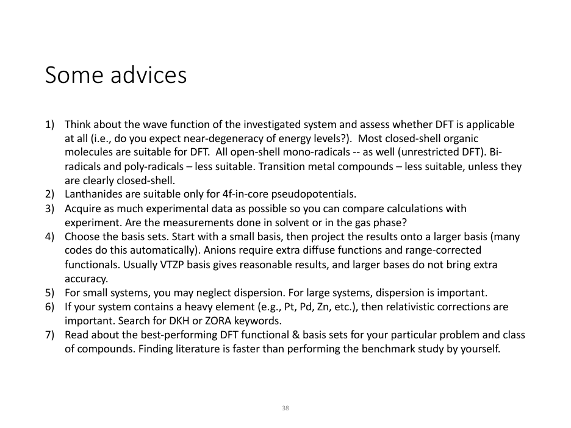
- 思考被研究体系的波函数，评估 DFT 是否适用（即你是否预期能级近简并？）。大多数闭壳层有机分子适合 DFT。所有开壳层单自由基也适合（非限制 DFT）。双自由基和多自由基——不太适合。过渡金属化合物——不太适合，除非它们明显是闭壳层。
- 镧系元素只适合用 4f-in-core 赝势。
- 尽可能多地获取实验数据，以便把计算与实验比较。测量是在溶剂中还是气相中完成的？
- 选择基组。从小基组开始，然后把结果投影到更大的基组上（很多程序自动做这件事）。阴离子需要额外的弥散函数和范围校正泛函。通常 VTZP 基组给出合理结果，更大的基组不带来额外精度。
- 对小体系可以忽略色散。对大体系，色散很重要。
- 如果你的体系含重元素（如 Pt、Pd、Zn 等），相对论校正很重要。搜索 DKH 或 ZORA 关键词。
- 阅读文献，找到针对你的具体问题和化合物类别表现最好的 DFT 泛函与基组。查文献比自己做基准测试更快。
讲解 · 每条建议背后的理由（都能在前面四讲找到）
| # | 建议 | 为什么（回溯到哪里） |
|---|---|---|
| 1 | 先判断有没有近简并 | KS-DFT 是单行列式方法，和 HF 一样处理不了静态相关（第 4 讲 p4、第 3 讲 p49–50）。p37 表的 MRBE 列就是证据 |
| 2 | 镧系用 4f-in-core | 4f 轨道 7 重近简并、强关联，DFT 算不对 → 干脆把 4f 电子冻进赝势里不管。要研究 4f 电子本身的性质（磁性、发光）必须用 CASSCF（OpenMOLCAS 作业） |
| 3 | 对照实验，注意溶剂 | 气相计算 vs 溶液实验可能差很多 → 需要溶剂模型（PCM/SMD，Gaussian 的 scrf，第 3 讲 p2 提到 Gaussian 的溶剂化支持） |
| 4 | 由小基组投影到大基组；阴离子加弥散 + 范围分离 | 第 3 讲 p60 拓展的 guess=read；p34 的长程渐近行为；第 3 讲 p75 的弥散函数。"TZ 以上无额外精度"——因为 DFT 的基组收敛比波函数方法快得多（p37 的警告框） |
| 5 | 大体系加色散 | p35："累积的" |
| 6 | 重元素加相对论 | 第 2 讲 p77 拓展：非相对论哈密顿量对重元素失效。DKH = Douglas–Kroll–Hess，ZORA = Zeroth-Order Regular Approximation，都是标量相对论哈密顿量 |
| 7 | 查文献 | 第 3 讲 p2："CPU 时间便宜，人脑时间贵"；p31：DFT 无系统改进路径，只能靠 benchmark |
- 哪些体系适合 DFT、哪些不适合（闭壳层有机 ✔、单自由基 ✔、双自由基 ✘、开壳层过渡金属 ✘、镧系需 4f-in-core）
p39–41★ 磁耦合：两个自旋之间的交换相互作用
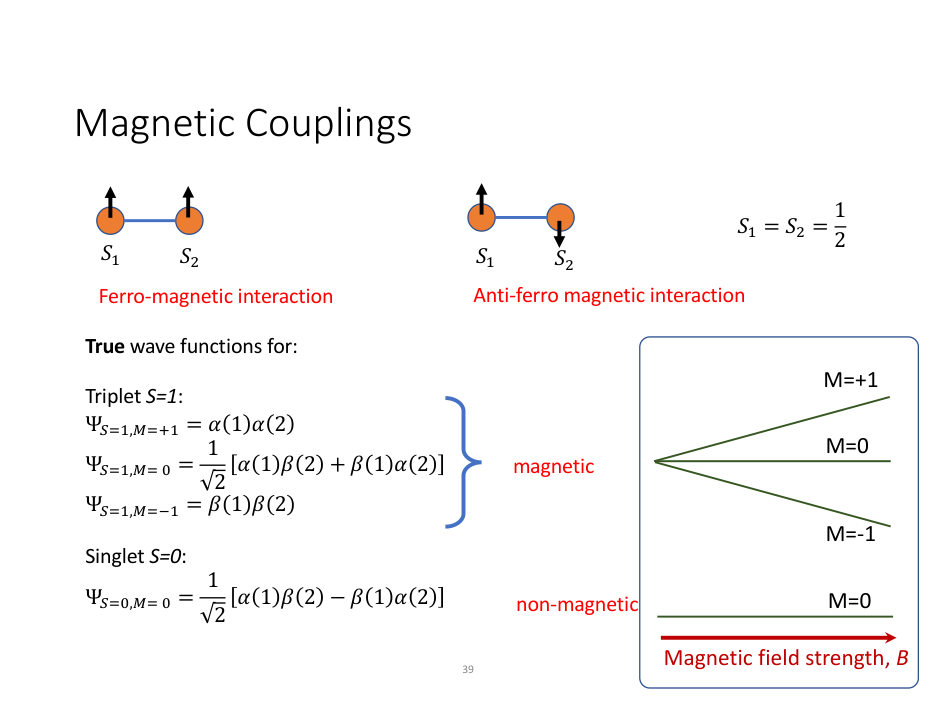
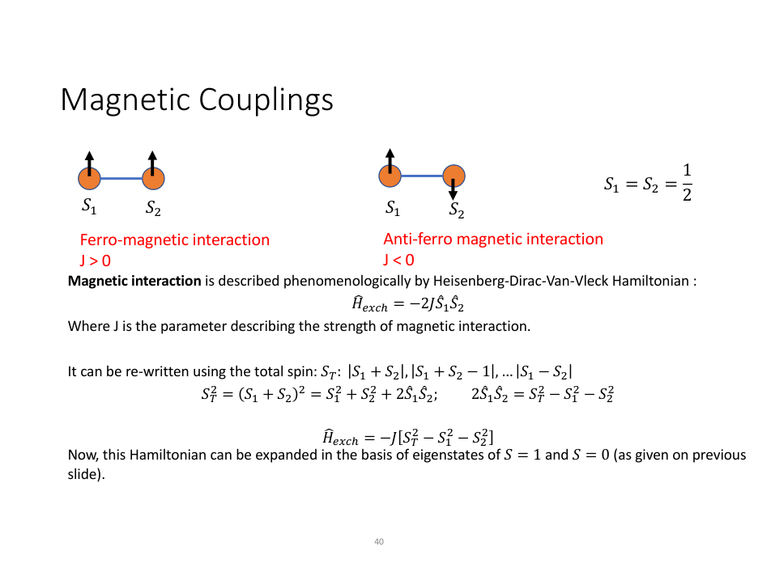

（图：两个自旋 S₁、S₂ 平行 = 铁磁相互作用；反平行 = 反铁磁相互作用。S₁ = S₂ = ½。）
真实波函数：
三重态 S=1：ΨS=1,M=+1 = α(1)α(2)；ΨS=1,M=0 = (1/√2)[α(1)β(2) + β(1)α(2)]；ΨS=1,M=−1 = β(1)β(2) ——磁性的
单重态 S=0：ΨS=0,M=0 = (1/√2)[α(1)β(2) − β(1)α(2)] ——非磁性的
（右图：随磁场强度 B 增大，三重态分裂成 M = +1, 0, −1 三条线；单重态 M=0 不随磁场变化。）
磁相互作用由 Heisenberg–Dirac–Van Vleck 哈密顿量唯象地描述：Ĥexch = −2J Ŝ₁·Ŝ₂
其中 J 是描述磁相互作用强度的参数。
它可以用总自旋改写：ST：S₁+S₂, S₁+S₂−1, …, |S₁−S₂|
ST² = (S₁+S₂)² = S₁² + S₂² + 2Ŝ₁·Ŝ₂； 2Ŝ₁·Ŝ₂ = ST² − S₁² − S₂²
Ĥexch = −J[ST² − S₁² − S₂²]
现在这个哈密顿量可以在 S=1 和 S=0 的本征态基下展开。铁磁相互作用 J > 0；反铁磁相互作用 J < 0。
三重态：E(ST=1) = −J[ST(ST+1) − S₁(S₁+1) − S₂(S₂+1)] = −J[2 − ½×3/2 − ½×3/2] = −½J
单重态：E(ST=0) = −J[0 − ½×3/2 − ½×3/2] = +(3/2)J
验证：−½J×(2×1+1) + (3/2)J×(2×0+1) = −(3/2)J + (3/2)J = 0
现在把 S=0 设为基态（即取为 0），三重态的能量为：E(ST=0) = 0；E(ST=1) = ΔEST = −½J − (+3/2J) = −2J
若 J > 0 ⟹ E(ST=1) < E(ST=0) ⟹ 铁磁耦合。
单重态与三重态之间的能隙直接与磁相互作用参数相联系。
如果 E(ST=1) 和 E(ST=0) 能由计算方法估算，就可以直接得到 J。对 CI 或多参考方法这里没有问题，只是相关计算很繁琐。
公式解析 · Heisenberg 哈密顿量
| 符号 | 名称 | 含义 |
|---|---|---|
| Ŝ1, Ŝ2 | 两个中心的自旋算符 | 比如双核配合物里两个金属离子各自的自旋。它们是矢量算符 |
| Ŝ1·Ŝ2 | 自旋点积 | 衡量两个自旋"平行还是反平行" |
| J | 交换耦合常数 | 一个唯象参数（不从第一原理算出，而是拟合实验的"一个数"）。单位常用 cm⁻¹。本讲约定：J > 0 铁磁，J < 0 反铁磁 |
| ŜT | 总自旋算符 | = Ŝ1 + Ŝ2。总自旋量子数 ST 从 |S₁−S₂| 到 S₁+S₂（第 2 讲 p58–59 的矢量相加规则） |
| "−2" | 约定因子 | 这是众多约定之一！文献里还有 −JŜ₁·Ŝ₂、+JŜ₁·Ŝ₂ 等写法，J 的数值和符号会差一个因子 2 或一个负号。比较不同文献的 J 前必须先核对约定 |
讲解 · p40 那步"改写"为什么成立
把总自旋平方展开（和 (a+b)² = a² + b² + 2ab 一样）：
（能这样展开是因为 Ŝ₁ 和 Ŝ₂ 作用在不同粒子上，彼此对易。）
好处：Ŝ2 类算符的本征值是现成的 S(S+1)（第 2 讲 p63），不用再算点积。
讲解 · 能级计算（p41，按步骤填表）
每个中心 S₁ = S₂ = ½，所以 S₁(S₁+1) = S₂(S₂+1) = ½ × 3/2 = 3/4。
| 态 | ST | ST(ST+1) | 方括号 [ ] | 能量 −J[ ] | 简并度 2ST+1 |
|---|---|---|---|---|---|
| 三重态 | 1 | 2 | 2 − 3/4 − 3/4 = ½ | −½J | 3 |
| 单重态 | 0 | 0 | 0 − 3/4 − 3/4 = −3/2 | +3/2 J | 1 |
−½J×3 + (3/2)J×1 = 0：按简并度加权的能量总和为零。这是因为 Ĥexch 的迹为零（Ŝ₁·Ŝ₂ 在所有 4 个自旋态上求和为零）——交换作用只是把能级"劈开"，不改变平均值（"重心守恒"）。这是检查计算有没有算错的好方法。
加外磁场后，能量变化 ∝ M·B（Zeeman 效应）。三重态有 M = +1, 0, −1，所以分裂成三条线，对磁场有响应；单重态只有 M = 0，对磁场没响应。
这就是测 J 的实验原理：测磁化率 χ 随温度的变化。反铁磁体系低温时只有单重态被布居 → χ → 0；升温后三重态被热激发（Boltzmann，第 2 讲 p7）→ χ 上升。用 Bleaney–Bowers 方程拟合 χ(T) 曲线就得到 J。
- 从 Ĥ = −2JŜ₁·Ŝ₂ 出发推出三重态 −J/2、单重态 +3J/2、ΔEST = −2J（完整推导可能直接考）
- J 的符号与铁磁/反铁磁的对应；Zeeman 分裂图
p42–43★ 用 DFT 算 J：破缺对称 (BS-DFT) 方法
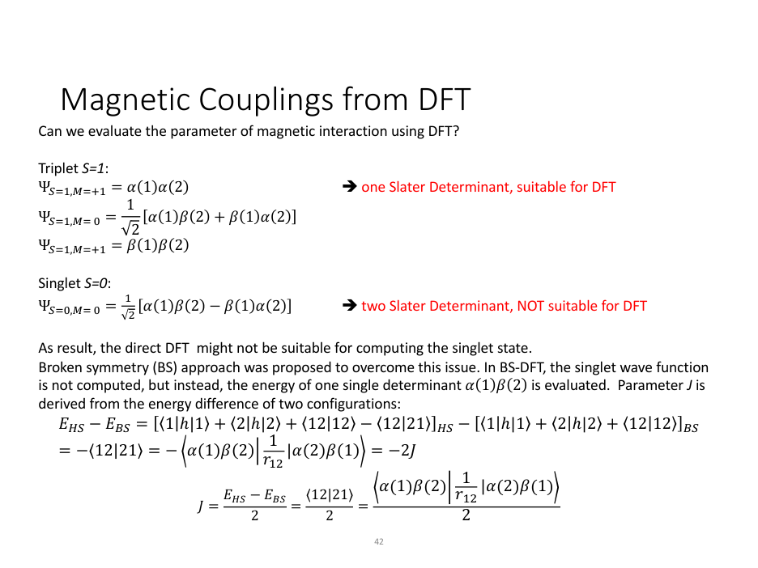
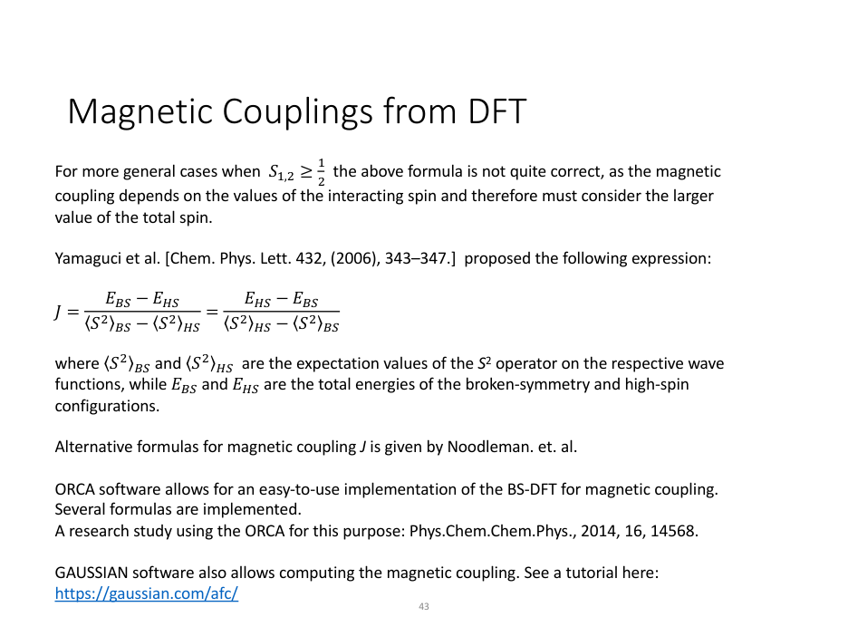
能用 DFT 计算磁相互作用参数吗？
三重态 S=1：ΨS=1,M=+1 = α(1)α(2) ⟹ 一个 Slater 行列式，适合 DFT
单重态 S=0：ΨS=0,M=0 = (1/√2)[α(1)β(2) − β(1)α(2)] ⟹ 两个 Slater 行列式，不适合 DFT
因此，直接用 DFT 可能不适合计算单重态。
为克服这个问题，提出了破缺对称 (BS) 方法。在 BS-DFT 中，不计算单重态波函数，而是计算一个行列式 α(1)β(2) 的能量。参数 J 由两个组态的能量差导出：
EHS − EBS = [⟨1|h|1⟩ + ⟨2|h|2⟩ + ⟨12|12⟩ − ⟨12|21⟩]HS − [⟨1|h|1⟩ + ⟨2|h|2⟩ + ⟨12|12⟩]BS
= −⟨12|21⟩ = −⟨α(1)β(2)|1/r₁₂|α(2)β(1)⟩ = −2J
J = (EHS − EBS)/2 = ⟨12|21⟩/2 = ⟨α(1)β(2)|1/r₁₂|α(2)β(1)⟩/2
对更一般的情形 S1,2 ≥ ½，上面的公式不太正确，因为磁耦合依赖于相互作用自旋的数值，因此必须考虑总自旋的较大值。
Yamaguchi 等人 [Chem. Phys. Lett. 432 (2006) 343–347] 提出了如下表达式：
J = (EBS − EHS) / (⟨S²⟩BS − ⟨S²⟩HS) = (EHS − EBS) / (⟨S²⟩HS − ⟨S²⟩BS)
其中 ⟨S²⟩BS 和 ⟨S²⟩HS 是 S² 算符在各自波函数上的期望值，EBS 和 EHS 是破缺对称和高自旋组态的总能量。
Noodleman 等人给出了 J 的另一种公式。
ORCA 软件提供了一个易用的 BS-DFT 磁耦合实现，实现了多种公式。使用 ORCA 做这件事的研究：Phys. Chem. Chem. Phys., 2014, 16, 14568。
GAUSSIAN 也可以计算磁耦合，教程见 gaussian.com/afc/。
讲解 · 为什么需要"破缺对称"
| 态 | 真实波函数 | DFT 能直接算吗 |
|---|---|---|
| 高自旋 (HS) 三重态 M=1 | |αα| —— 1 个行列式 | ✔ |
| 单重态 | (|αβ| − |βα|)/√2 —— 2 个行列式 | ✘ KS-DFT 只有 1 个行列式（第 2 讲 p73 的开壳层单重态问题） |
| 破缺对称 (BS) | |α(1)β(2)| —— 1 个行列式，左边自旋向上、右边向下 | ✔ 能算，但它不是自旋本征态 |
"破缺对称"指破坏了自旋对称性：BS 行列式既不是纯的单重态也不是纯的三重态，而是两者的混合（第 3 讲 p52–53 的自旋污染）。它"故意"被污染，然后用公式把污染校正掉。
推导逐步 · p42 的行列式能量差
两个磁性轨道 1（在左边金属上）、2（在右边金属上），各放一个电子：
| 行列式 | 自旋排布 | 能量（第 3 讲 p44 规则） |
|---|---|---|
| HS | 1↑ 2↑ | h₁₁ + h₂₂ + J₁₂ − K₁₂ （自旋相同 → 有交换项） |
| BS | 1↑ 2↓ | h₁₁ + h₂₂ + J₁₂ （自旋相反 → 没有交换项） |
讲义的记号：⟨1|h|1⟩ = h₁₁，⟨12|12⟩ = 库仑积分 J₁₂，⟨12|21⟩ = 交换积分 K₁₂。注意这里的 J₁₂（库仑积分）和耦合常数 J 是两个完全不同的东西——字母撞车了。
这一步和第 3 讲 p45 拓展里算的完全一样。
本讲 p40–41 的约定是：Ĥ = −2JŜ₁·Ŝ₂，J > 0 为铁磁，E(S=1) − E(S=0) = −2J。
p42：先写 EHS − EBS = −2J（✔ 与 p41 一致，把 BS 当作单重态），紧接着却写 J = (EHS − EBS)/2——代入前一式得 J = −J，自相矛盾。最右边的 ⟨12|21⟩/2 是对的。
p43：Yamaguchi 公式分子分母的顺序也反了。按 −2J 约定的标准形式是：
自检方法（考试时用这个判断，不用死记）：铁磁体系 HS 更稳定，EBS > EHS；又总有 ⟨S²⟩HS > ⟨S²⟩BS。上式分子分母都为正 → J > 0 ✔ 铁磁。讲义原式在同样情形下给出 J < 0，与 p40 的约定矛盾。
如果考试直接考讲义原式，建议写出你采用的约定并说明符号。
公式解析 · Yamaguchi 公式与两个极限
| 符号 | 名称 | 含义 |
|---|---|---|
| EHS | 高自旋态能量 | 所有未成对电子自旋平行的 UKS 计算（两个 Cu²⁺ → 多重度 3） |
| EBS | 破缺对称态能量 | 一个中心自旋翻转后的 UKS 计算（MS = 0） |
| ⟨S²⟩HS | HS 态的 S² 期望值 | 接近纯自旋态的理论值 Smax(Smax+1)。两个 ½ 自旋：= 2 |
| ⟨S²⟩BS | BS 态的 S² 期望值 | 介于 0 和 Smax 之间，反映 BS 态混入了多少三重态。两个 ½ 自旋、磁轨道几乎不重叠时 ≈ 1 |
| 分母 | 自旋污染校正 | 把"BS 不是纯单重态"这件事定量地考虑进来 |
| 假设 | ⟨S²⟩BS | Yamaguchi 分母 | 结果 |
|---|---|---|---|
| BS ≈ 纯单重态（磁轨道强重叠） | 0 | 2 − 0 = 2 | J = (EBS−EHS)/2 ← 就是 p42 的结果（Ruiz/Bencini 公式） |
| BS ≈ 一半单重态 + 一半三重态（磁轨道弱重叠） | 1 | 2 − 1 = 1 | J = EBS−EHS ← Noodleman 公式 |
| 一般情形 | 实际计算值 | ⟨S²⟩HS − ⟨S²⟩BS | Yamaguchi：在两个极限之间自动插值 |
弱重叠时 BS 行列式 |αβ| 恰好是 (单重态 + 三重态M=0)/√2，所以 EBS ≈ ½(ES + ET)，于是 EBS − EHS = ½(ES − ET) = ½ × 2J = J。
这就是 p43 说"一般情形下上面的公式不太正确"的真正含义：p42 默认 BS 就是单重态，但实际上 BS 是自旋污染的混合态。ORCA 的 BS 输出会同时打印这三种公式给出的 J 值。
p42 的推导得到 J = K₁₂/2，而交换积分 K₁₂ 永远为正 → J 永远 > 0 → 永远是铁磁。可实际上大多数双核 Cu(II) 配合物是反铁磁的，这是为什么？
因为推导里假设了"两个行列式用同样的轨道"（冻结轨道）。真实的反铁磁性来自超交换 (superexchange)：两个磁性轨道通过桥联配体（Cl⁻）的轨道发生重叠，电子可以"跳过去"，而只有自旋相反时才允许跳（泡利），跳跃带来的动能降低让单重态更稳定。这一项 ∝ −t²/U（t = 跳跃积分，U = 同位排斥），叫动力学交换。
真实的 BS-DFT 计算为什么能抓到它：在 UKS 计算里，BS 态的 α 和 β 轨道是各自优化的，会向对方中心发生离域——这种轨道弛豫就包含了超交换效应。
结构-磁性关系（p48 附加任务的背景）：Goodenough–Kanamori 规则——M–X–M 桥联角接近 90° 时，两条超交换路径的轨道正交，倾向铁磁；角度增大时重叠增大，倾向反铁磁。对双 μ-Cl 桥联 Cu₂ 体系，交叉点大致在 Cu–Cl–Cu ≈ 90–95°附近。所以作业里"算 J 随 Cu–Cl–Cu 角的变化"应该能看到符号翻转。
- 为什么 DFT 不能直接算开壳层单重态（需要 2 个行列式）；BS 方法的思路
- 用行列式能量规则推出 EHS − EBS = −K₁₂
- Yamaguchi 公式的形式与物理意义（用 ⟨S²⟩ 校正自旋污染）；两个极限
- 符号约定：写 J 时必须写明哈密顿量的形式
p44–45传播子方法与 TD-DFT：算激发态
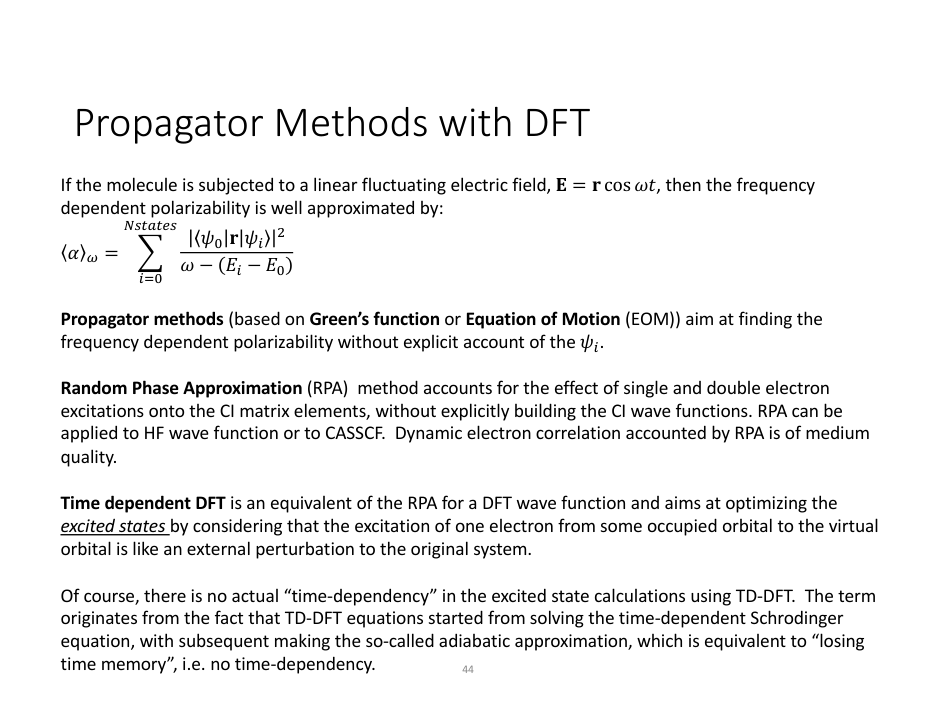
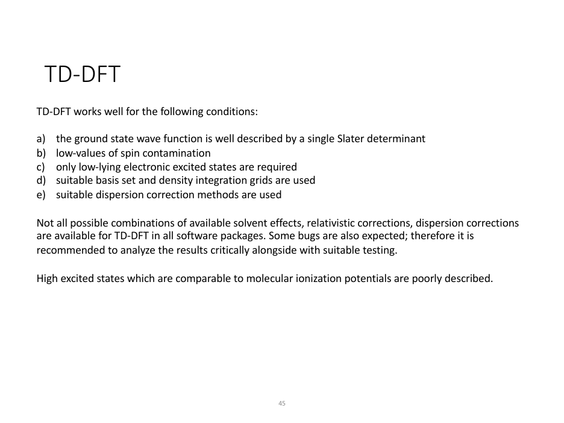
如果分子受到一个线性振荡电场 E = r cosωt 的作用，频率依赖的极化率可以很好地近似为：
⟨α⟩ω = Σi=0Nstates |⟨ψ0|r|ψi⟩|² / [ω − (Ei − E0)]
传播子方法（基于 Green 函数或运动方程 EOM）旨在不显式计算 ψi 就求出频率依赖极化率。
随机相位近似 (RPA) 方法计入单、双电子激发对 CI 矩阵元的影响，而不显式构造 CI 波函数。RPA 可以作用于 HF 波函数或 CASSCF。RPA 计入的动态电子相关质量中等。
含时 DFT (TD-DFT) 是 RPA 对 DFT 波函数的等价物，它通过把"电子从某个占据轨道激发到虚轨道"看作对原体系的外部微扰，来优化激发态。
当然，用 TD-DFT 计算激发态时并没有真正的"时间依赖"。这个名字来源于 TD-DFT 方程最初是从求解含时薛定谔方程出发的，之后做了所谓的绝热近似，这等价于"丢失时间记忆"，即不再依赖时间。
TD-DFT 在以下条件下表现良好：
- 基态波函数能被单个 Slater 行列式很好地描述
- 自旋污染低
- 只需要低能的电子激发态
- 使用了合适的基组和密度积分格点
- 使用了合适的色散校正方法
并非所有软件包都为 TD-DFT 提供溶剂效应、相对论校正、色散校正的所有组合。也会有一些 bug；因此建议对结果进行批判性分析并配合适当的测试。
能量与分子电离能相当的高激发态描述得很差。
公式解析 · 频率依赖极化率（求和-态公式）
| 符号 | 名称 | 含义 |
|---|---|---|
| α(ω) | 动态极化率 | 分子在频率为 ω 的光照下"被极化"的难易程度 |
| ω | 外场（光）的频率 | 原子单位下即光子能量 |
| ⟨ψ0|r|ψi⟩ | 跃迁偶极矩 | 基态到激发态 i 的跃迁偶极矩（第 2 讲 p16 拓展）。它的平方决定吸收强度（振子强度） |
| Ei − E0 | 激发能 | 第 i 个激发态的能量 = UV-Vis 吸收峰的位置 |
| Σi | 对所有激发态求和 | 讲义上限写 Nstates |
当光的频率 ω 恰好等于某个激发能 Ei − E0 时，分母 → 0，α(ω) → ∞——这叫极点 (pole)，物理上就是共振吸收。
所以：只要能算出"分子对振荡电场的响应函数 α(ω)"，找到它的极点位置就得到了所有激发能，找到极点处的留数就得到了跃迁强度——完全不需要显式算出激发态波函数 ψi。这就是"传播子方法 / 线性响应理论"的核心思想，TD-DFT 就是其中一员。
讲解 · 三个名词
| 名词 | 一句话 |
|---|---|
| RPA（随机相位近似） | 在 HF（或 CASSCF）基础上做线性响应，求激发能。也叫 TD-HF。包含"激发"和"去激发"两种过程 |
| TD-DFT | "RPA 的 DFT 版"：用 KS 轨道和 XC 核做同样的线性响应。实际计算中最常用的激发态方法 |
| 绝热近似 | 真正的含时 XC 势应该依赖密度的整个历史（记忆效应）；绝热近似假设它只依赖当前时刻的密度，于是可以直接用基态的 XC 泛函。这是 TD-DFT 算不好双激发态的根源 |
| 问题 | 原因与对策 |
|---|---|
| 电荷转移 (CT) 激发能严重偏低 | SIE + 错误的长程行为（p33–34）。用 CAM-B3LYP / ωB97X-D |
| 高激发态、Rydberg 态差（p45 最后一句） | 激发电子跑到很远，GGA 势衰减太快（p34）；还需要弥散基组 |
| 双激发特征的态完全漏掉 | 绝热线性响应 TD-DFT 只能给出单激发。多烯的暗态 2Ag、许多光化学关键态 → 用 CASPT2 / NEVPT2 |
| 基态本身多参考（p45 条件 a） | 参考态错了，响应也错。开壳层过渡金属、双自由基 → 多参考方法 |
Gaussian 用法：#p td=(nstates=10) cam-b3lyp/6-31+G(d)。输出里 Excited State 1: ... 3.5421 eV 350.03 nm f=0.2134——eV 是激发能，nm 是对应波长，f 是振子强度（∝ |跃迁偶极矩|²，决定峰的高度）。
- 极化率态求和公式的物理含义：极点 = 激发能，分子 = 跃迁强度
- TD-DFT 的名称来源与绝热近似；它的适用条件（p45 五条）与失败场景
p46–48实践：ORCA 软件与 [Cu₂Cl₆]²⁻ 磁耦合任务
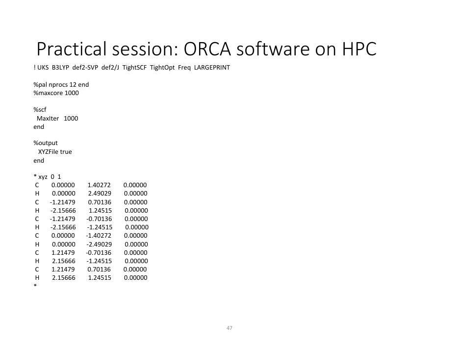
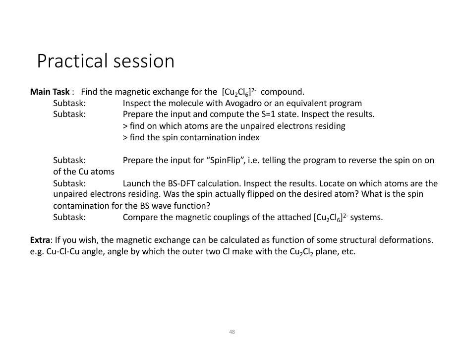
学习 ORCA 的有用链接：① ORCA 5.0.2 手册（Canvas: Files → Examples_for_various_calculations → ORCA）；② ORCA 输入库；③ ORCA 论坛；④ ORCA 教程站。另有通用输入、UV-Vis 光谱、磁耦合、过渡态的视频教程链接。
主要任务：求 [Cu₂Cl₆]²⁻ 化合物的磁交换。
- 子任务：用 Avogadro 或等效程序检查分子
- 子任务：准备输入并计算 S=1 态。检查结果：> 找出未成对电子位于哪些原子上；> 找出自旋污染指标
- 子任务：准备 "SpinFlip" 的输入，即告诉程序翻转其中一个 Cu 原子上的自旋
- 子任务：运行 BS-DFT 计算。检查结果。找出未成对电子位于哪些原子上。自旋确实在目标原子上翻转了吗？BS 波函数的自旋污染是多少？
- 子任务：比较所附 [Cu₂Cl₆]²⁻ 体系的磁耦合。
附加：如果你愿意，可以把磁交换作为某些结构形变的函数来计算，例如 Cu–Cl–Cu 角、外侧两个 Cl 与 Cu₂Cl₂ 平面的夹角等。
逐行解析 · p47 的 ORCA 输入文件（苯的优化 + 频率）
! UKS B3LYP def2-SVP def2/J TightSCF TightOpt Freq LARGEPRINT %pal nprocs 12 end %maxcore 1000 %scf MaxIter 1000 end %output XYZFile true end * xyz 0 1 C 0.00000 1.40272 0.00000 ...（12 个原子） *
| 写法 | 含义 |
|---|---|
UKS | Unrestricted Kohn–Sham = 非限制 DFT（第 2 讲 p91 的 UHF 的 DFT 版）。苯是闭壳层，UKS 会自动收敛到和 RKS 相同的解 |
B3LYP | 泛函（p30） |
def2-SVP | Ahlrichs 双 zeta 极化基组。def2 系列覆盖到 Rn，重元素自动带 ECP——算 Cu 体系比 Pople 基组方便 |
def2/J | RI 辅助基组（第 3 讲 p64）。必须和 def2 主基组配套 |
TightSCF / TightOpt | 收紧 SCF 和几何优化的收敛阈值（做频率前必须） |
Freq | 振动频率（检查虚频，第 3 讲 p81） |
LARGEPRINT | 详细输出——Avogadro 读振动模式必需（第 3 讲 p20） |
%pal nprocs 12 end | 12 核并行。必须与 PBS 脚本的 ncpus 一致（第 1 讲 p41） |
%maxcore 1000 | 每个核 1000 MB 内存。总内存 = 12 × 1000 MB = 12 GB，PBS 申请要再留余量 |
%scf MaxIter 1000 end | SCF 最多迭代 1000 轮（默认 125，过渡金属体系常不够） |
XYZFile true | 额外输出一个 .xyz 结构文件，方便可视化 |
* xyz 0 1 … * | 笛卡尔坐标，电荷 0，多重度 1 |
讲解 · p48 任务的做法思路
[Cu₂Cl₆]²⁻：两个 Cu(II)，每个 d⁹，各有 1 个未成对电子（S₁ = S₂ = ½）。两个 Cu 由两个桥联 Cl 相连（Cu₂Cl₂ 菱形核心），外侧各有两个端基 Cl。总电荷 −2（2×Cu²⁺ + 6×Cl⁻ = +4 − 6）。
! UKS B3LYP def2-TZVP def2/J TightSCF LargePrint * xyz -2 3 <- 电荷 -2, 多重度 3 (两个自旋平行) ...
要检查的：
- Mulliken 自旋布居（p5 的 Pα − Pβ）：两个 Cu 上应该各有约 +0.5–0.6，其余分布在 Cl 上（自旋离域到配体——这正是超交换的通道）
- ⟨S²⟩：理论值 2.00，实际应在 2.00–2.01（高自旋态几乎无污染）
ORCA 最简单的写法：
! UKS B3LYP def2-TZVP def2/J TightSCF LargePrint %scf BrokenSym 1,1 <- 一个中心 1 个未成对电子向上, 另一个 1 个向下 end * xyz -2 3 <- 先按高自旋收敛, 程序再自动翻转 ...
或者用讲义说的 "SpinFlip" 显式指定翻转哪个原子：%scf FlipSpin 1 FinalMs 0.0 end（FlipSpin 后面是要翻转的原子编号，ORCA 从 0 开始数）。
要检查的：
- 自旋布居：一个 Cu 约 +0.5，另一个约 −0.5——如果两个都接近 0，说明塌回了闭壳层解，翻转失败
- ⟨S²⟩BS：应在 1.0 附近（弱重叠）或更小（强重叠）——p43 Yamaguchi 公式要用
用 Yamaguchi（按上面订正后的符号）：J = (EBS − EHS)/(⟨S²⟩HS − ⟨S²⟩BS)。能量从 Hartree 换成 cm⁻¹：1 Hartree = 219 474.6 cm⁻¹。
典型 J 只有几到几百 cm⁻¹，即 10⁻⁵–10⁻³ Hartree——比总能量小 7–8 个数量级。所以两次计算必须用完全相同的几何、基组、格点、收敛阈值，否则数值噪声就会盖过 J。这也是 TightSCF 在这里必不可少的原因。
BS-DFT 算出的 J 强烈依赖泛函中 HF 交换的比例：纯 GGA（SIE 大、过度离域）严重高估反铁磁耦合；HF 交换越多，|J| 越小。B3LYP 和 TPSSh 是常用的折中。报告 J 时必须注明泛函。
- ORCA 输入各关键词的含义（
UKS、def2/J、%maxcore是每核内存） - BS-DFT 计算的流程：HS 计算 → 翻转一个中心的自旋 → BS 计算 → 用能量差和 ⟨S²⟩ 算 J
本讲小结
一、一张图串起整讲
二、必须记住的公式
| 公式 | 页码 | 一句话 |
|---|---|---|
| ρ = ΣPμνφμφν，N = ΣPμνSμν | p4 | 密度矩阵与电子数 |
| Vext = −ΣΣZA/|RA−ri| | p7 | 唯一区分不同分子的项 |
| E[ρ] = FHK[ρ] + ∫ρVext | p20 | FHK 普适但未知 |
| [−½∇² + VH + Vext + Vxc]φi = εiφi | p22 | KS 方程；只有 Vxc 要近似 |
| ExLDA ∝ −∫ρ4/3 | p29 | 均匀电子气交换 |
| B3LYP：(1−a)ExLSDA + aExHF + bΔExB88 + (1−c)EcLSDA + cEcLYP | p30 | a=0.20，3 个经验参数 |
| 1/r12 = [1−erf(ωr)]/r + erf(ωr)/r | p34 | 范围分离 |
| ΔEdisp = −ΣsnΣCnABR−nfdamp | p35 | Grimme D3 |
| Ĥ = −2JŜ₁·Ŝ₂ ⟹ ΔEST = −2J | p40–41 | J>0 铁磁 |
| J = (EBS−EHS)/(⟨S²⟩HS−⟨S²⟩BS) | p43 | Yamaguchi（已按 p40 约定订正符号） |
三、最可能考的概念题
| 问题 | 答题要点 |
|---|---|
| 陈述 HK 两个定理 | ① 基态密度与外势一一对应，一切基态性质是 ρ 的泛函；② 精确能量泛函在真实密度处取最小（p17, p19） |
| 证明 HK 第一定理 | 反证：设 V≠V′ 但 ρ=ρ′ → 变分原理两次 → 相加得 E+E′ < E+E′（p15） |
| 函数与泛函的区别 | 函数：数→数；泛函：函数→数（p18） |
| Kohn–Sham 的核心思想是什么？为什么说它是精确的？ | 无相互作用替身体系重现真实密度；未知部分全放进 Vxc；若 Vxc 精确则结果精确（p22） |
| HF 与 KS-DFT 的异同 | 形式相同（单行列式、SCF）；HF 交换精确非局域、无相关；DFT 交换相关都近似但局域（p23） |
| Jacob 阶梯五级 | LDA(ρ) → GGA(+∇ρ) → meta-GGA(+τ) → 杂化(+HF 交换) → 双杂化(+MP2)（p36） |
| 为什么 DFT 严格说不是 ab initio | 实用泛函含拟合实验数据的经验参数（p25） |
| 什么是自相互作用误差？后果？ | 近似 Exc 不能精确抵消 Jii（HF 中 Jii=Kii）；过度离域、能垒偏低、带隙偏小（p33） |
| DFT 为什么算不出色散？怎么补？ | 泛函是局域的，看不到远处的关联涨落；Grimme D3（p32, p35） |
| 范围分离泛函的原理与用途 | erf 拆分 1/r12，长程 HF 交换；修 SIE、CT 激发能（p34） |
| 什么体系不适合 DFT？ | 近简并/多参考：双自由基、开壳层过渡金属、断键；镧系要 4f-in-core（p38） |
| 从 −2JŜ₁·Ŝ₂ 推 ΔEST | 用 ST² 改写，三重态 −J/2，单重态 +3J/2（p41） |
| 为什么要破缺对称？Yamaguchi 公式校正了什么？ | 开壳层单重态需 2 个行列式，KS 只有 1 个；BS 态是自旋污染的混合态，用 ⟨S²⟩ 差校正（p42–43） |
| TD-DFT 的原理与局限 | 线性响应，极化率极点=激发能；绝热近似；CT/Rydberg/双激发差（p44–45） |